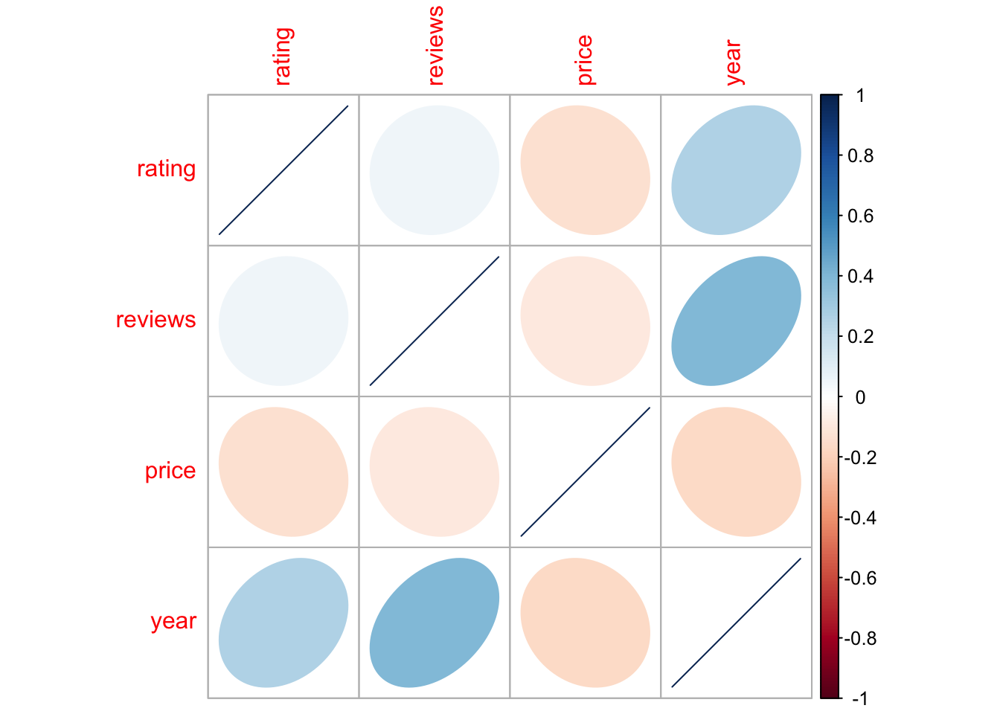
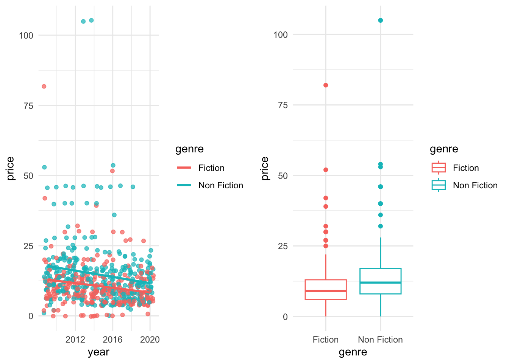
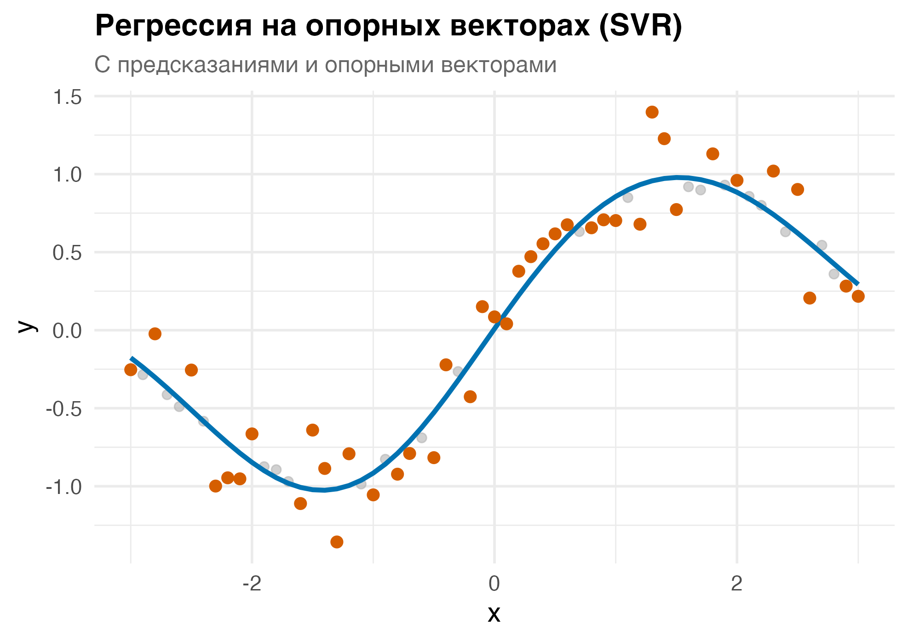
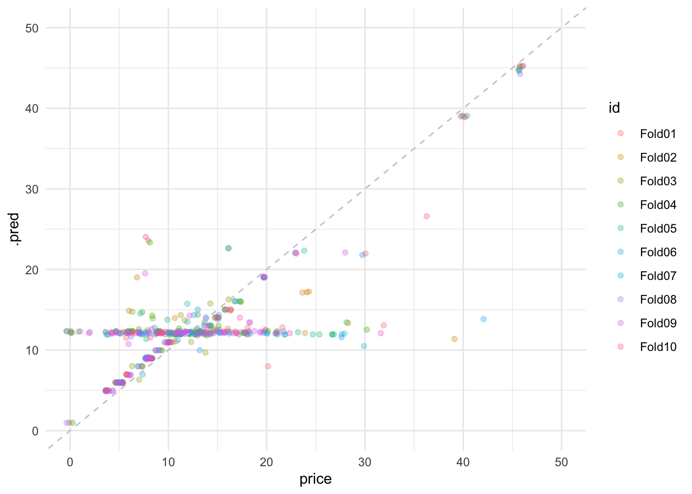
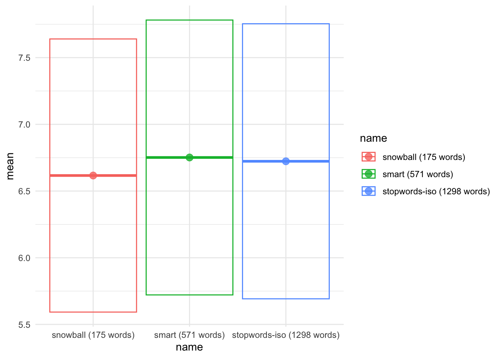
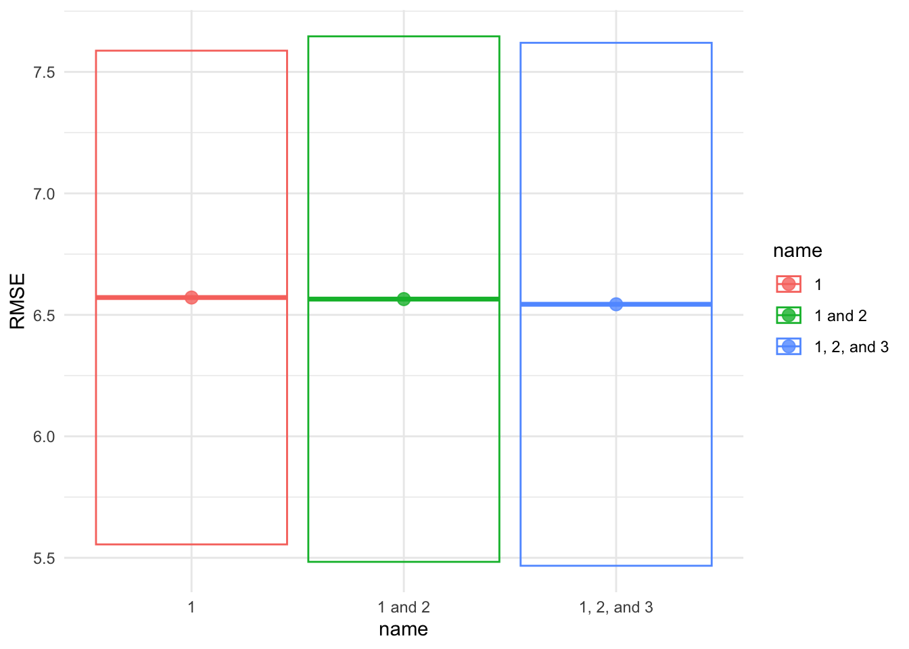
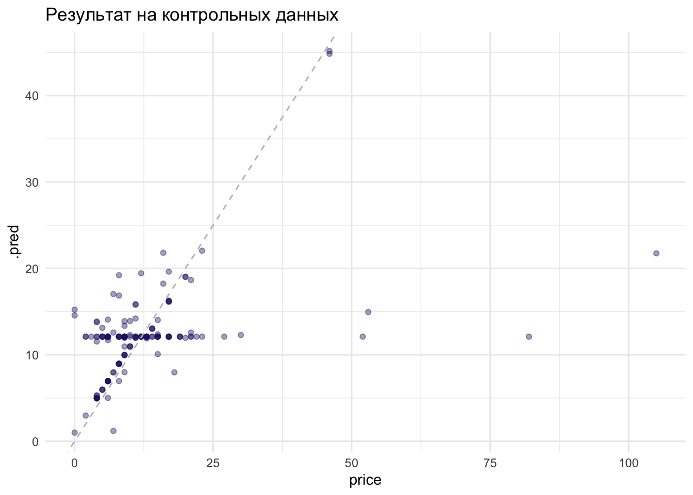
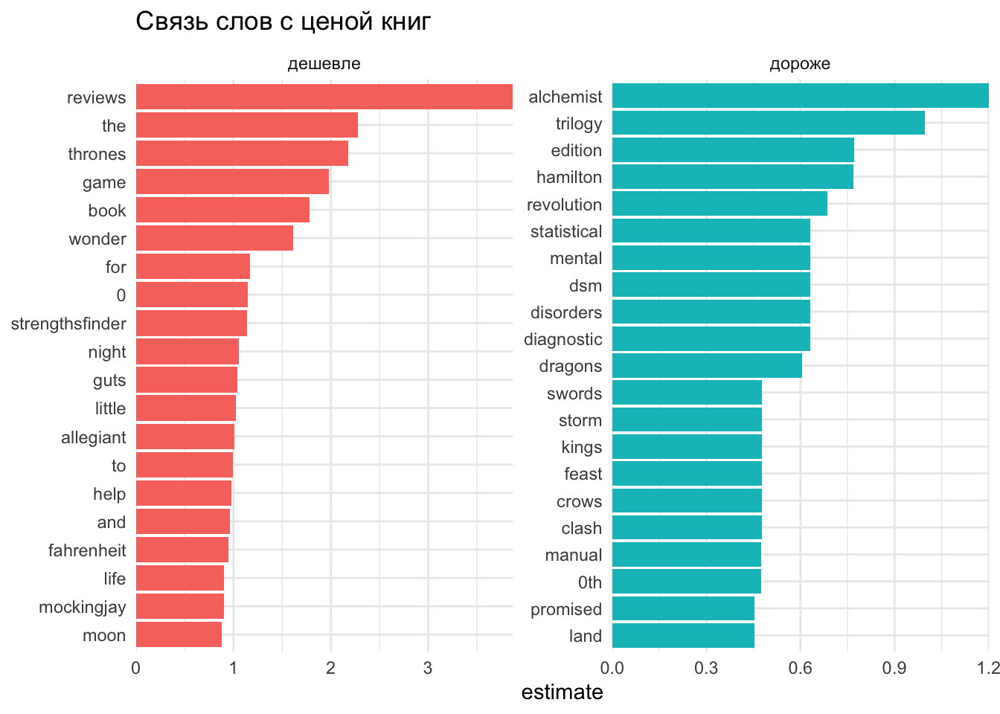

library(tidyverse)
library(tidymodels)
library(textrecipes)24 Регрессионные модели: SVR
24.1 Регрессионные алгоритмы
В машинном обучении проблемы, связанные с количественным откликом, называют проблемами регрессии, а проблемы, связанные с качественным откликом, проблемами классификации. В прошлом уроке мы познакомились с простой и множественной регрессией.
Но регрессионных алгоритмов великое множество. Вот лишь некоторые из них.
полиномиальная регрессия: расширение линейной регрессии, позволяющее учитывать нелинейные зависимости.
логистическая регрессия: используется для прогнозирования категориальных (бинарных) откликов.
регрессия на опорных векторах (SVM): ищет гиперплоскость, позволяющую минимизировать ошибку в многомерном пространстве.
деревья регрессии: строят иерархическую древовидную модель, последовательно разбивая данные на подгруппы.
случайный лес: комбинирует предсказания множества деревьев для повышения точности и устойчивости.
Кроме того, существуют методы регуляризации линейных моделей, позволяющие существенно улучшить их качество на данных большой размерности (т.е. с большим количеством предкторов). К таким алгоритмам относятся гребневая регрессия и метод лассо. О них мы поговорим в одном из следующих уроков.
О математической стороне дела см. Г. Джеймс, Д. Уиттон, Т. Хасти, Р. Тибришани (2017). В этом уроке мы начнем работать с различными регрессионными алгоритмами, используя библиотеку {tidymodels}.
24.2 Библиотека tidymodels
Библиотека tidymodels позволяет обучать модели и оценивать их эффективность с использованием принципов опрятных данных. Она представляет собой набор пакетов R, которые разработаны для работы с машинным обучением и совместима с экосистемой {tidyverse}.
Вот некоторые из ключевых пакетов, входящих в состав {tidymodels}:
{parsnip}- универсальный интерфейс для различных моделей машинного обучения, который упрощает переключение между разными типами моделей;{recipes}- фреймворк для создания и управления “рецептами” предварительной обработки данных перед тренировкой модели;{rsample}- инструменты для разделения данных на обучающую и тестовую выборки, а также для кросс-валидации;{tune}- функции для оптимизации гиперпараметров моделей машинного обучения;{yardstick}- инструменты для оценки производительности моделей;{workflow}позволяет объединить различные компоненты модели в единый объект: препроцессинг данных, модель машинного обучения, настройку гиперпараметров.
Мы также будем использовать пакет {textrecipes}, который представляет собой аналог {recipes} для текстовых данных.
24.3 Данные
Датасет для этого урока хранит данные о названиях, рейтингах, жанре, цене и числе отзывов на некоторые книги с Amazon. Мы попробуем построить регресионную модель, которая будет предсказывать цену книги. Скачайте данные по ссылке и прочитайте в окружение.
books <- readxl::read_xlsx("../files/AmazonBooks.xlsx")
booksДанные не очень опрятны, и прежде всего их надо тайдифицировать.
colnames(books) <- tolower(colnames(books))
books <- books |>
rename(rating = `user rating`)На графике ниже видно, что сильной корреляции между количественными переменными не прослеживается, так что задача перед нами стоит незаурядная. Посмотрим, что можно сделать в такой ситуации.
books |>
select_if(is.numeric) |>
cor() |>
corrplot::corrplot(method = "ellipse")
Мы видим, что количественные предикторы объясняют лишь ничтожную долю дисперсии (чуть более информативен жанр).
summary(lm(price ~ reviews + year + rating + genre, data = books))
Call:
lm(formula = price ~ reviews + year + rating + genre, data = books)
Residuals:
Min 1Q Median 3Q Max
-16.472 -5.050 -1.841 2.307 89.686
Coefficients:
Estimate Std. Error t value Pr(>|t|)
(Intercept) 8.987e+02 2.734e+02 3.287 0.00107 **
reviews 7.779e-07 3.181e-05 0.024 0.98050
year -4.324e-01 1.370e-01 -3.156 0.00168 **
rating -3.655e+00 1.933e+00 -1.891 0.05909 .
genreNon Fiction 3.920e+00 8.669e-01 4.522 7.41e-06 ***
---
Signif. codes: 0 '***' 0.001 '**' 0.01 '*' 0.05 '.' 0.1 ' ' 1
Residual standard error: 10.16 on 595 degrees of freedom
Multiple R-squared: 0.06903, Adjusted R-squared: 0.06277
F-statistic: 11.03 on 4 and 595 DF, p-value: 1.235e-08Посмотрим, можно ли как-то улучшить этот результат. Но сначала оценим визуально связь между ценой, с одной стороны, и годом и жанром, с другой.
g1 <- books |>
ggplot(aes(year, price, color = genre, group = genre)) +
geom_jitter(show.legend = FALSE, alpha = 0.7) +
geom_smooth(method = "lm", se = FALSE) +
theme_minimal()
g2 <- books |>
ggplot(aes(genre, price, color = genre)) +
geom_boxplot() +
theme_minimal()
gridExtra::grid.arrange(g1, g2, nrow = 1)
24.4 Обучающая и контрольная выборка
Вы уже знаете, при обучении модели мы стремимся к минимизации среднеквадратичной ошибки (MSE), однако в большинстве случаев нас интересует не то, как метод работает на обучающих данных, а то, как он покажет себя на контрольных данных. Чтобы избежать переобучения, очень важно в самом начале разделить доступные наблюдения на две группы.
books_split <- books |>
initial_split()
books_train <- training(books_split)
books_test <- testing(books_split)24.5 Определение модели
Определение модели включает следующие шаги:
указывается тип модели на основе ее математической структуры (например, линейная регрессия, случайный лес, KNN и т. д.);
указывается механизм для подгонки модели – чаще всего это программный пакет, который должен быть использован, например
{glmnet}. Это самостоятельные модели, и{parsnip}обеспечивает согласованные интерфейсы, используя их в качестве движков для моделирования.при необходимости объявляется режим модели. Режим отражает тип прогнозируемого результата. Для числовых результатов режимом является регрессия, для качественных - классификация. Если алгоритм модели может работать только с одним типом результатов прогнозирования, например, линейной регрессией, режим уже задан.
На заметку
В R существует много разных пакетов и отдельных функций для построения моделей. У каждого пакета свой синтаксис и свои названия параметров. Например, в {ranger}, чтобы задать количество деревьев, пишут num.trees, а в {xgboost} — nrounds. Это неудобно: каждый раз нужно вспоминать правила конкретного пакета. {parsnip} создает единый, унифицированный интерфейс для всех моделей. Это позволяет переключаться между разными пакетами, не переучивая синтаксис.
24.6 Регрессия на опорных векторах
Support Vector Regression — это метод машинного обучения, основанный на идеях метода опорных векторов (SVM), но адаптированный к задаче регрессии, а не классификации (о чем см. следующий урок).
Вместо поиска разделяющей гиперплоскости между классами (как в классификации), SVR старается найти функцию, которая:
- игнорирует небольшие отклонения внутри некоторого допустимого порога ε (эпсилон),
- акцентирует внимание на точках, которые лежат вне этой “трубы”, — это и есть опорные векторы.
В этом заключается отличие от обычной регрессии, которая старается проложить прямую, наиболее близкую ко всем точкам и “наказывает” любое отклонение.
SVR тоже строит линию (или кривую в случае нелинейного ядра), но с другим подходом. Она “довольна”, если предсказание находится в пределах допустимой ошибки ε (эпсилон) от настоящего значения.
SVR концентрируется только на тех точках, что выходят за эту “зону безразличия” или лежат на ее границе — они называются опорными векторами. Именно они определяют форму и положение модели. Остальные точки (в пределах ε) никак не влияют на модель.

24.7 Линейная SVR
Функция translate() позволяет понять, как parsnip переводит пользовательский код на язык пакета.
svm_spec <- svm_linear() |>
set_engine("LiblineaR") |>
set_mode("regression")
svm_spec |>
translate()Linear Support Vector Machine Model Specification (regression)
Computational engine: LiblineaR
Model fit template:
LiblineaR::LiblineaR(x = missing_arg(), y = missing_arg(), type = 11,
svr_eps = 0.1)Пока это просто спецификация модели без данных и без формулы. Добавим ее к воркфлоу.
svm_wflow <- workflow() |>
add_model(svm_spec)
svm_wflow══ Workflow ════════════════════════════════════════════════════════════════════
Preprocessor: None
Model: svm_linear()
── Model ───────────────────────────────────────────────────────────────────────
Linear Support Vector Machine Model Specification (regression)
Computational engine: LiblineaR 24.8 Дизайн переменных
Теперь нам нужен препроцессор. За него отвечает пакет {recipes}. Если вы не уверены, какие шаги необходимы на этом этапе, можно заглянуть в шпаргалку. В случае с линейной регрессией это может быть логарифмическая трансформация, нормализация, отсев переменных с нулевой дисперсией (zero variance), добавление (impute) недостающих значений или удаление переменных, которые коррелируют с другими переменными.
Вот так выглядит наш первый рецепт. Обратите внимание, что формула записывается так же, как мы это делали ранее внутри функции lm(). Порядок шагов важен (поэтому применяем нормализацию в самом конце)!
books_rec <- recipe(price ~ year + genre + name + reviews + rating,
data = books_train) |>
step_dummy(genre) |>
step_tokenize(name) |>
step_tokenfilter(name, max_tokens = 1000) |>
step_tfidf(name) |>
step_normalize(all_predictors())При желании можно посмотреть на результат предобработки.
Для этого сначала передаем функции prep(), которая отвечает за подготовку (обучение рецепта). На этом этапе компьютер внимательно изучает ваши тренировочные данные, чтобы вычислить параметры для каждого шага, например среднее и стандартное отклонение для step_normalize(), словарь для step_tokenfilter() и т.д. Рецепт “запоминает” эти значения, чтобы потом применить их точно так же к новым данным. Сами данные на этом этапе еще не меняются.
Команда bake() примененяет рецепт к данным, т.е. берет таблицу с данными и прогоняет её через все шаги, используя параметры из prep(). В результате вы получаете готовую широкую матрицу с числами, которую уже можно “скармливать” алгоритму SVR.
prep(books_rec, books_train) |>
bake(new_data = NULL) |>
head(5) |>
gt::gt()| year | reviews | rating | price | genre_Non.Fiction | tfidf_name_1 | tfidf_name_1,111 | tfidf_name_10 | tfidf_name_100 | tfidf_name_11 | tfidf_name_12 | tfidf_name_13 | tfidf_name_14 | tfidf_name_140 | tfidf_name_15 | tfidf_name_150 | tfidf_name_16 | tfidf_name_17 | tfidf_name_1936 | tfidf_name_1984 | tfidf_name_2 | tfidf_name_2.0 | tfidf_name_20 | tfidf_name_2016 | tfidf_name_22 | tfidf_name_3 | tfidf_name_30 | tfidf_name_300 | tfidf_name_4 | tfidf_name_451 | tfidf_name_49 | tfidf_name_5 | tfidf_name_5,000 | tfidf_name_500 | tfidf_name_5000 | tfidf_name_52 | tfidf_name_5th | tfidf_name_6 | tfidf_name_60 | tfidf_name_63 | tfidf_name_6th | tfidf_name_7 | tfidf_name_700 | tfidf_name_8 | tfidf_name_a | tfidf_name_about | tfidf_name_absurd | tfidf_name_account | tfidf_name_acid | tfidf_name_act | tfidf_name_activity | tfidf_name_adult | tfidf_name_adults | tfidf_name_advanced | tfidf_name_adventures | tfidf_name_adversity | tfidf_name_after | tfidf_name_afterlife | tfidf_name_aftermath | tfidf_name_against | tfidf_name_ages | tfidf_name_agreements | tfidf_name_ahead | tfidf_name_air | tfidf_name_alaska | tfidf_name_alchemist | tfidf_name_alex | tfidf_name_all | tfidf_name_allegiant | tfidf_name_almost | tfidf_name_alphabet | tfidf_name_am | tfidf_name_amateur | tfidf_name_amazing | tfidf_name_america | tfidf_name_america's | tfidf_name_american | tfidf_name_americans | tfidf_name_an | tfidf_name_ancient | tfidf_name_and | tfidf_name_angie's | tfidf_name_animal | tfidf_name_animals | tfidf_name_answers | tfidf_name_antidote | tfidf_name_antiracist | tfidf_name_approach | tfidf_name_are | tfidf_name_art | tfidf_name_as | tfidf_name_asians | tfidf_name_assassination | tfidf_name_assault | tfidf_name_association | tfidf_name_astounding | tfidf_name_astrophysics | tfidf_name_at | tfidf_name_atomic | tfidf_name_attitude | tfidf_name_audacious | tfidf_name_autobiography | tfidf_name_awesome | tfidf_name_azkaban | tfidf_name_b | tfidf_name_baby | tfidf_name_back | tfidf_name_bad | tfidf_name_badass | tfidf_name_balance | tfidf_name_ball | tfidf_name_ballad | tfidf_name_barefoot | tfidf_name_battling | tfidf_name_be | tfidf_name_bear | tfidf_name_beasts | tfidf_name_beautiful | tfidf_name_beck's | tfidf_name_become | tfidf_name_becomes | tfidf_name_becoming | tfidf_name_bed | tfidf_name_bee | tfidf_name_beginner's | tfidf_name_beginners | tfidf_name_believing | tfidf_name_belly | tfidf_name_berlin | tfidf_name_better | tfidf_name_between | tfidf_name_big | tfidf_name_bill | tfidf_name_billionaires | tfidf_name_bin | tfidf_name_birthday | tfidf_name_blitz | tfidf_name_blood | tfidf_name_blue | tfidf_name_boat | tfidf_name_body | tfidf_name_bombers | tfidf_name_book | tfidf_name_books | tfidf_name_boom | tfidf_name_born | tfidf_name_boxed | tfidf_name_boy | tfidf_name_boy's | tfidf_name_boys | tfidf_name_brain | tfidf_name_brain's | tfidf_name_brave | tfidf_name_brawl | tfidf_name_break | tfidf_name_breath | tfidf_name_bree | tfidf_name_brigance | tfidf_name_bringing | tfidf_name_brink | tfidf_name_broke | tfidf_name_brothers | tfidf_name_brown | tfidf_name_brush | tfidf_name_build | tfidf_name_building | tfidf_name_bundo | tfidf_name_burn | tfidf_name_business | tfidf_name_buy | tfidf_name_by | tfidf_name_cabin | tfidf_name_cakes | tfidf_name_called | tfidf_name_calligraphy | tfidf_name_calling | tfidf_name_calm | tfidf_name_camelot | tfidf_name_can | tfidf_name_can't | tfidf_name_cannot | tfidf_name_capital | tfidf_name_captain | tfidf_name_carbs | tfidf_name_case | tfidf_name_caste | tfidf_name_casual | tfidf_name_catch | tfidf_name_catching | tfidf_name_caterpillar | tfidf_name_cauldron | tfidf_name_celebrations | tfidf_name_century | tfidf_name_champion | tfidf_name_change | tfidf_name_changed | tfidf_name_changing | tfidf_name_chaos | tfidf_name_chicka | tfidf_name_child | tfidf_name_childrenâ’s | tfidf_name_choose | tfidf_name_christian | tfidf_name_chronicles | tfidf_name_churchill | tfidf_name_ck | tfidf_name_clash | tfidf_name_class | tfidf_name_classic | tfidf_name_classics | tfidf_name_clintons | tfidf_name_club | tfidf_name_collected | tfidf_name_collection | tfidf_name_college | tfidf_name_color | tfidf_name_coloring | tfidf_name_colors | tfidf_name_comfort | tfidf_name_commander | tfidf_name_comments | tfidf_name_commitment | tfidf_name_common | tfidf_name_companies | tfidf_name_compass | tfidf_name_complete | tfidf_name_confession | tfidf_name_confident | tfidf_name_confronts | tfidf_name_conservative | tfidf_name_construction | tfidf_name_contessa | tfidf_name_control | tfidf_name_cookbook | tfidf_name_cookbooks | tfidf_name_cooker | tfidf_name_cooking | tfidf_name_cooks | tfidf_name_cooling | tfidf_name_coping | tfidf_name_counterintuitive | tfidf_name_courage | tfidf_name_cravings | tfidf_name_crawdads | tfidf_name_crayons | tfidf_name_crazy | tfidf_name_creating | tfidf_name_creative | tfidf_name_creator | tfidf_name_crest | tfidf_name_crime | tfidf_name_cross | tfidf_name_crows | tfidf_name_cultivate | tfidf_name_cursed | tfidf_name_cutting | tfidf_name_daily | tfidf_name_dance | tfidf_name_danny | tfidf_name_dare | tfidf_name_daring | tfidf_name_darker | tfidf_name_david | tfidf_name_day | tfidf_name_days | tfidf_name_dead | tfidf_name_dear | tfidf_name_death | tfidf_name_decades | tfidf_name_deckled | tfidf_name_decluttering | tfidf_name_deep | tfidf_name_defiance | tfidf_name_definitive | tfidf_name_defy | tfidf_name_delicious | tfidf_name_deluxe | tfidf_name_designed | tfidf_name_designs | tfidf_name_devotional | tfidf_name_diagnostic | tfidf_name_diary | tfidf_name_diet | tfidf_name_difficult | tfidf_name_dinnertime | tfidf_name_dirt | tfidf_name_disappointments | tfidf_name_discontents | tfidf_name_disease | tfidf_name_disorders | tfidf_name_divergent | tfidf_name_do | tfidf_name_doctor's | tfidf_name_documents | tfidf_name_dog | tfidf_name_dome | tfidf_name_don't | tfidf_name_double | tfidf_name_doubting | tfidf_name_dover | tfidf_name_down | tfidf_name_dragon | tfidf_name_dragons | tfidf_name_dream | tfidf_name_drive | tfidf_name_dsm | tfidf_name_duck | tfidf_name_dungeons | tfidf_name_during | tfidf_name_dysfunctions | tfidf_name_earth | tfidf_name_easy | tfidf_name_eat | tfidf_name_echoed | tfidf_name_eclipse | tfidf_name_edge | tfidf_name_edition | tfidf_name_educated | tfidf_name_effective | tfidf_name_electric | tfidf_name_elegance | tfidf_name_elements | tfidf_name_elephants | tfidf_name_end | tfidf_name_english | tfidf_name_enjoying | tfidf_name_epic | tfidf_name_essential | tfidf_name_eternity | tfidf_name_ever | tfidf_name_every | tfidf_name_everyday | tfidf_name_everything | tfidf_name_everywhere | tfidf_name_exceptional | tfidf_name_expect | tfidf_name_expecting | tfidf_name_express | tfidf_name_extreme | tfidf_name_f | tfidf_name_fable | tfidf_name_fabulous | tfidf_name_face | tfidf_name_facing | tfidf_name_facts | tfidf_name_fahrenheit | tfidf_name_faith | tfidf_name_families | tfidf_name_family | tfidf_name_fantastic | tfidf_name_fast | tfidf_name_fat | tfidf_name_fate | tfidf_name_fault | tfidf_name_feast | tfidf_name_feel | tfidf_name_feeling | tfidf_name_fetch | tfidf_name_fever | tfidf_name_fiction | tfidf_name_fifty | tfidf_name_financial | tfidf_name_find | tfidf_name_finding | tfidf_name_fire | tfidf_name_fires | tfidf_name_first | tfidf_name_firsthand | tfidf_name_fish | tfidf_name_fitness | tfidf_name_five | tfidf_name_flap | tfidf_name_flawed | tfidf_name_fleas | tfidf_name_flowers | tfidf_name_food | tfidf_name_foolproof | tfidf_name_fools | tfidf_name_for | tfidf_name_forâ | tfidf_name_forever | tfidf_name_found | tfidf_name_four | tfidf_name_fox | tfidf_name_fragility | tfidf_name_freakonomics | tfidf_name_free | tfidf_name_freed | tfidf_name_freedom | tfidf_name_freezer | tfidf_name_friends | tfidf_name_from | tfidf_name_frontier | tfidf_name_frozen | tfidf_name_full | tfidf_name_fully | tfidf_name_fun | tfidf_name_future | tfidf_name_game | tfidf_name_games | tfidf_name_garden | tfidf_name_gathering | tfidf_name_gatsby | tfidf_name_general | tfidf_name_gentleman | tfidf_name_geographic | tfidf_name_george | tfidf_name_get | tfidf_name_giants | tfidf_name_gifts | tfidf_name_giraffes | tfidf_name_girl | tfidf_name_girls | tfidf_name_give | tfidf_name_giving | tfidf_name_glenn | tfidf_name_global | tfidf_name_glory | tfidf_name_go | tfidf_name_goblet | tfidf_name_god | tfidf_name_going | tfidf_name_gold | tfidf_name_golden | tfidf_name_goldfinch | tfidf_name_goliath | tfidf_name_gone | tfidf_name_good | tfidf_name_goodnight | tfidf_name_government | tfidf_name_grades | tfidf_name_grain | tfidf_name_gratitude | tfidf_name_great | tfidf_name_greatly | tfidf_name_greatness | tfidf_name_greenlights | tfidf_name_grey | tfidf_name_grime | tfidf_name_guardians | tfidf_name_guide | tfidf_name_guided | tfidf_name_gut | tfidf_name_guts | tfidf_name_guy | tfidf_name_habit | tfidf_name_habits | tfidf_name_hades | tfidf_name_half | tfidf_name_hamilton | tfidf_name_hand | tfidf_name_handbook | tfidf_name_handmaid's | tfidf_name_hands | tfidf_name_happened | tfidf_name_happy | tfidf_name_harbinger | tfidf_name_hard | tfidf_name_hardcover | tfidf_name_harry | tfidf_name_hate | tfidf_name_haul | tfidf_name_have | tfidf_name_haven | tfidf_name_hayek | tfidf_name_head | tfidf_name_heal | tfidf_name_healing | tfidf_name_health | tfidf_name_healthy | tfidf_name_healthyâ | tfidf_name_heartfelt | tfidf_name_heat | tfidf_name_heaven | tfidf_name_hedgehog | tfidf_name_hell | tfidf_name_help | tfidf_name_henrietta | tfidf_name_her | tfidf_name_hero | tfidf_name_heroes | tfidf_name_highly | tfidf_name_his | tfidf_name_historia | tfidf_name_history | tfidf_name_holds | tfidf_name_holidays | tfidf_name_homebody | tfidf_name_honey | tfidf_name_hornet's | tfidf_name_horse | tfidf_name_hour | tfidf_name_house | tfidf_name_how | tfidf_name_human | tfidf_name_humans | tfidf_name_hunger | tfidf_name_hungry | tfidf_name_hunt | tfidf_name_hurricane | tfidf_name_hurry | tfidf_name_hurt | tfidf_name_hyperbole | tfidf_name_hypothetical | tfidf_name_hyrule | tfidf_name_i | tfidf_name_ice | tfidf_name_icons | tfidf_name_ideas | tfidf_name_if | tfidf_name_ii | tfidf_name_ii's | tfidf_name_illustrated | tfidf_name_imagination | tfidf_name_immortal | tfidf_name_in | tfidf_name_inches | tfidf_name_incredible | tfidf_name_inferno | tfidf_name_inflatable | tfidf_name_influence | tfidf_name_inky | tfidf_name_inspirational | tfidf_name_inspired | tfidf_name_instant | tfidf_name_insurance | tfidf_name_intimacy | tfidf_name_into | tfidf_name_introverts | tfidf_name_irreverent | tfidf_name_is | tfidf_name_it | tfidf_name_it's | tfidf_name_jackson | tfidf_name_jake | tfidf_name_japanese | tfidf_name_jesus | tfidf_name_jobs | tfidf_name_john | tfidf_name_jokes | tfidf_name_jon | tfidf_name_journal | tfidf_name_journey | tfidf_name_joy | tfidf_name_joyland | tfidf_name_k | tfidf_name_kane | tfidf_name_keeps | tfidf_name_kennedy | tfidf_name_keto | tfidf_name_ketogenic | tfidf_name_key | tfidf_name_kicked | tfidf_name_kid | tfidf_name_kids | tfidf_name_kill | tfidf_name_killed | tfidf_name_killers | tfidf_name_killing | tfidf_name_kings | tfidf_name_kissed | tfidf_name_kitchen | tfidf_name_kitteridge | tfidf_name_kitties | tfidf_name_knickerbocker | tfidf_name_knock | tfidf_name_know | tfidf_name_knowledge | tfidf_name_lacks | tfidf_name_laden | tfidf_name_lady | tfidf_name_land | tfidf_name_langdon | tfidf_name_languages | tfidf_name_last | tfidf_name_lasts | tfidf_name_laugh | tfidf_name_lead | tfidf_name_leadership | tfidf_name_leap | tfidf_name_learn | tfidf_name_leave | tfidf_name_lectin | tfidf_name_lecture | tfidf_name_left | tfidf_name_legacy | tfidf_name_legend | tfidf_name_lego | tfidf_name_less | tfidf_name_lessons | tfidf_name_lethal | tfidf_name_lettering | tfidf_name_lgbt | tfidf_name_liberty | tfidf_name_lies | tfidf_name_life | tfidf_name_lifestyle | tfidf_name_lifetime | tfidf_name_lift | tfidf_name_light | tfidf_name_like | tfidf_name_lincoln | tfidf_name_litigators | tfidf_name_little | tfidf_name_live | tfidf_name_lived | tfidf_name_living | tfidf_name_lonely | tfidf_name_long | tfidf_name_looking | tfidf_name_lord | tfidf_name_lose | tfidf_name_losing | tfidf_name_loss | tfidf_name_lost | tfidf_name_loud | tfidf_name_love | tfidf_name_loved | tfidf_name_luck | tfidf_name_magic | tfidf_name_magical | tfidf_name_magnolia | tfidf_name_make | tfidf_name_makeover | tfidf_name_man | tfidf_name_manifesto | tfidf_name_manual | tfidf_name_mark | tfidf_name_marlon | tfidf_name_master | tfidf_name_mastering | tfidf_name_mate | tfidf_name_matter | tfidf_name_maybe | tfidf_name_mayhem | tfidf_name_maze | tfidf_name_mccain | tfidf_name_me | tfidf_name_meals | tfidf_name_meant | tfidf_name_mechanisms | tfidf_name_meltdown | tfidf_name_memoir | tfidf_name_men | tfidf_name_menders | tfidf_name_mental | tfidf_name_midnight | tfidf_name_military | tfidf_name_milk | tfidf_name_millennium | tfidf_name_mind | tfidf_name_mindfulness | tfidf_name_mindset | tfidf_name_minute | tfidf_name_miracles | tfidf_name_misfits | tfidf_name_missing | tfidf_name_mission | tfidf_name_mockingbird | tfidf_name_mockingjay | tfidf_name_modern | tfidf_name_mole | tfidf_name_mon | tfidf_name_money | tfidf_name_moon | tfidf_name_more | tfidf_name_moscow | tfidf_name_most | tfidf_name_motivates | tfidf_name_mountains | tfidf_name_mueller | tfidf_name_my | tfidf_name_mystery | tfidf_name_national | tfidf_name_navy | tfidf_name_need | tfidf_name_neptune | tfidf_name_nest | tfidf_name_neurosurgeon's | tfidf_name_never | tfidf_name_new | tfidf_name_night | tfidf_name_nine | tfidf_name_no | tfidf_name_not | tfidf_name_nouveau | tfidf_name_novel | tfidf_name_novella | tfidf_name_now | tfidf_name_numbers | tfidf_name_nutrient | tfidf_name_o'reilly's | tfidf_name_obama | tfidf_name_odds | tfidf_name_of | tfidf_name_official | tfidf_name_oh | tfidf_name_olive | tfidf_name_oliver | tfidf_name_olympian | tfidf_name_olympians | tfidf_name_olympics | tfidf_name_olympus | tfidf_name_on | tfidf_name_one | tfidf_name_ones | tfidf_name_oprah's | tfidf_name_option | tfidf_name_or | tfidf_name_organizing | tfidf_name_origin | tfidf_name_original | tfidf_name_origins | tfidf_name_orphan | tfidf_name_osama | tfidf_name_other | tfidf_name_others | tfidf_name_our | tfidf_name_out | tfidf_name_outliers | tfidf_name_ove | tfidf_name_over | tfidf_name_overwhelmed | tfidf_name_owls | tfidf_name_p | tfidf_name_pacific | tfidf_name_paine | tfidf_name_palin | tfidf_name_paperback | tfidf_name_paradox | tfidf_name_parent | tfidf_name_paris | tfidf_name_parts | tfidf_name_passions | tfidf_name_pastimes | tfidf_name_path | tfidf_name_patient | tfidf_name_patriotic | tfidf_name_patriots | tfidf_name_patrol | tfidf_name_patterns | tfidf_name_patton | tfidf_name_paw | tfidf_name_peace | tfidf_name_people | tfidf_name_percy | tfidf_name_performers | tfidf_name_person | tfidf_name_personal | tfidf_name_pet | tfidf_name_pictures | tfidf_name_pilgrims | tfidf_name_pioneer | tfidf_name_places | tfidf_name_plan | tfidf_name_plant | tfidf_name_played | tfidf_name_player | tfidf_name_player's | tfidf_name_pokã | tfidf_name_politics | tfidf_name_pot | tfidf_name_potter | tfidf_name_potty | tfidf_name_pounds | tfidf_name_pout | tfidf_name_power | tfidf_name_powerful | tfidf_name_practical | tfidf_name_prayer | tfidf_name_pre | tfidf_name_preschool | tfidf_name_presence | tfidf_name_presents | tfidf_name_presidency | tfidf_name_president | tfidf_name_pressure | tfidf_name_preventing | tfidf_name_prisoner | tfidf_name_prize | tfidf_name_program | tfidf_name_promised | tfidf_name_proof | tfidf_name_prostitutes | tfidf_name_proven | tfidf_name_psychological | tfidf_name_psychology | tfidf_name_publication | tfidf_name_pulitzer | tfidf_name_punishment | tfidf_name_puppy | tfidf_name_put | tfidf_name_pyramid | tfidf_name_quest | tfidf_name_questions | tfidf_name_quiet | tfidf_name_quintet | tfidf_name_quit | tfidf_name_quotes | tfidf_name_race | tfidf_name_racing | tfidf_name_racism | tfidf_name_racketeer | tfidf_name_radical | tfidf_name_rage | tfidf_name_rain | tfidf_name_rapid | tfidf_name_readingâ | tfidf_name_ready | tfidf_name_reagan | tfidf_name_real | tfidf_name_really | tfidf_name_reasons | tfidf_name_recipes | tfidf_name_red | tfidf_name_redemption | tfidf_name_references | tfidf_name_rehearsal | tfidf_name_relationships | tfidf_name_relentless | tfidf_name_relieving | tfidf_name_report | tfidf_name_resilience | tfidf_name_restore | tfidf_name_results | tfidf_name_reusable | tfidf_name_revere | tfidf_name_revised | tfidf_name_revolution | tfidf_name_revolutionary | tfidf_name_rich | tfidf_name_riddles | tfidf_name_right | tfidf_name_ring | tfidf_name_road | tfidf_name_robert | tfidf_name_rogue | tfidf_name_rolls | tfidf_name_routines | tfidf_name_row | tfidf_name_rules | tfidf_name_ruling | tfidf_name_run | tfidf_name_runner | tfidf_name_rush | tfidf_name_sacred | tfidf_name_saga | tfidf_name_salt | tfidf_name_sarah's | tfidf_name_sat | tfidf_name_save | tfidf_name_saved | tfidf_name_school | tfidf_name_scientific | tfidf_name_score | tfidf_name_screenplay | tfidf_name_script | tfidf_name_scripture | tfidf_name_scrumptious | tfidf_name_seal | tfidf_name_second | tfidf_name_secret | tfidf_name_see | tfidf_name_selfish | tfidf_name_sense | tfidf_name_serfdom | tfidf_name_series | tfidf_name_serious | tfidf_name_sesame | tfidf_name_set | tfidf_name_seuss | tfidf_name_sex | tfidf_name_shack | tfidf_name_shades | tfidf_name_shapes | tfidf_name_shattered | tfidf_name_ship | tfidf_name_shocking | tfidf_name_short | tfidf_name_should | tfidf_name_show | tfidf_name_shred | tfidf_name_signet | tfidf_name_silent | tfidf_name_silly | tfidf_name_simple | tfidf_name_sing | tfidf_name_site | tfidf_name_situations | tfidf_name_six | tfidf_name_sizes | tfidf_name_sleep | tfidf_name_smart | tfidf_name_snakes | tfidf_name_sniper | tfidf_name_so | tfidf_name_solution | tfidf_name_solveâ | tfidf_name_some | tfidf_name_son | tfidf_name_song | tfidf_name_songbirds | tfidf_name_sookie | tfidf_name_sorcerer's | tfidf_name_soul | tfidf_name_spaces | tfidf_name_special | tfidf_name_spiral | tfidf_name_stackhouse | tfidf_name_stars | tfidf_name_start | tfidf_name_step | tfidf_name_steve | tfidf_name_stone | tfidf_name_stop | tfidf_name_storm | tfidf_name_story | tfidf_name_street | tfidf_name_strengthsfinder | tfidf_name_stress | tfidf_name_study | tfidf_name_subtle | tfidf_name_success | tfidf_name_sugar | tfidf_name_sun | tfidf_name_surprising | tfidf_name_survival | tfidf_name_swords | tfidf_name_tale | tfidf_name_talking | tfidf_name_team | tfidf_name_techniques | tfidf_name_than | tfidf_name_that | tfidf_name_the | tfidf_name_things | tfidf_name_think | tfidf_name_this | tfidf_name_three | tfidf_name_thrones | tfidf_name_thug | tfidf_name_tidying | tfidf_name_time | tfidf_name_to | tfidf_name_toltec | tfidf_name_total | tfidf_name_tragedy | tfidf_name_train | tfidf_name_travel | tfidf_name_treasure | tfidf_name_trilogy | tfidf_name_trip | tfidf_name_true | tfidf_name_trust | tfidf_name_truth | tfidf_name_try | tfidf_name_twilight | tfidf_name_unbroken | tfidf_name_underpants | tfidf_name_unexpected | tfidf_name_unicorn | tfidf_name_unlock | tfidf_name_up | tfidf_name_us | tfidf_name_users | tfidf_name_very | tfidf_name_volume | tfidf_name_want | tfidf_name_war | tfidf_name_wash | tfidf_name_washington's | tfidf_name_way | tfidf_name_we | tfidf_name_week | tfidf_name_weight | tfidf_name_were | tfidf_name_what | tfidf_name_wheat | tfidf_name_when | tfidf_name_where | tfidf_name_white | tfidf_name_who | tfidf_name_whole30 | tfidf_name_why | tfidf_name_wife | tfidf_name_wild | tfidf_name_will | tfidf_name_wimpy | tfidf_name_win | tfidf_name_wisdom | tfidf_name_with | tfidf_name_woman | tfidf_name_women | tfidf_name_wonder | tfidf_name_wonderful | tfidf_name_words | tfidf_name_world | tfidf_name_writing | tfidf_name_year | tfidf_name_york | tfidf_name_you | tfidf_name_you'll | tfidf_name_your | tfidf_name_zone | tfidf_name_zoo |
|---|---|---|---|---|---|---|---|---|---|---|---|---|---|---|---|---|---|---|---|---|---|---|---|---|---|---|---|---|---|---|---|---|---|---|---|---|---|---|---|---|---|---|---|---|---|---|---|---|---|---|---|---|---|---|---|---|---|---|---|---|---|---|---|---|---|---|---|---|---|---|---|---|---|---|---|---|---|---|---|---|---|---|---|---|---|---|---|---|---|---|---|---|---|---|---|---|---|---|---|---|---|---|---|---|---|---|---|---|---|---|---|---|---|---|---|---|---|---|---|---|---|---|---|---|---|---|---|---|---|---|---|---|---|---|---|---|---|---|---|---|---|---|---|---|---|---|---|---|---|---|---|---|---|---|---|---|---|---|---|---|---|---|---|---|---|---|---|---|---|---|---|---|---|---|---|---|---|---|---|---|---|---|---|---|---|---|---|---|---|---|---|---|---|---|---|---|---|---|---|---|---|---|---|---|---|---|---|---|---|---|---|---|---|---|---|---|---|---|---|---|---|---|---|---|---|---|---|---|---|---|---|---|---|---|---|---|---|---|---|---|---|---|---|---|---|---|---|---|---|---|---|---|---|---|---|---|---|---|---|---|---|---|---|---|---|---|---|---|---|---|---|---|---|---|---|---|---|---|---|---|---|---|---|---|---|---|---|---|---|---|---|---|---|---|---|---|---|---|---|---|---|---|---|---|---|---|---|---|---|---|---|---|---|---|---|---|---|---|---|---|---|---|---|---|---|---|---|---|---|---|---|---|---|---|---|---|---|---|---|---|---|---|---|---|---|---|---|---|---|---|---|---|---|---|---|---|---|---|---|---|---|---|---|---|---|---|---|---|---|---|---|---|---|---|---|---|---|---|---|---|---|---|---|---|---|---|---|---|---|---|---|---|---|---|---|---|---|---|---|---|---|---|---|---|---|---|---|---|---|---|---|---|---|---|---|---|---|---|---|---|---|---|---|---|---|---|---|---|---|---|---|---|---|---|---|---|---|---|---|---|---|---|---|---|---|---|---|---|---|---|---|---|---|---|---|---|---|---|---|---|---|---|---|---|---|---|---|---|---|---|---|---|---|---|---|---|---|---|---|---|---|---|---|---|---|---|---|---|---|---|---|---|---|---|---|---|---|---|---|---|---|---|---|---|---|---|---|---|---|---|---|---|---|---|---|---|---|---|---|---|---|---|---|---|---|---|---|---|---|---|---|---|---|---|---|---|---|---|---|---|---|---|---|---|---|---|---|---|---|---|---|---|---|---|---|---|---|---|---|---|---|---|---|---|---|---|---|---|---|---|---|---|---|---|---|---|---|---|---|---|---|---|---|---|---|---|---|---|---|---|---|---|---|---|---|---|---|---|---|---|---|---|---|---|---|---|---|---|---|---|---|---|---|---|---|---|---|---|---|---|---|---|---|---|---|---|---|---|---|---|---|---|---|---|---|---|---|---|---|---|---|---|---|---|---|---|---|---|---|---|---|---|---|---|---|---|---|---|---|---|---|---|---|---|---|---|---|---|---|---|---|---|---|---|---|---|---|---|---|---|---|---|---|---|---|---|---|---|---|---|---|---|---|---|---|---|---|---|---|---|---|---|---|---|---|---|---|---|---|---|---|---|---|---|---|---|---|---|---|---|---|---|---|---|---|---|---|---|---|---|---|---|---|---|---|---|---|---|---|---|---|---|---|---|---|---|---|---|---|---|---|---|---|---|---|---|---|---|---|---|---|---|---|---|---|---|---|---|---|---|---|---|---|---|---|---|---|---|---|---|---|---|---|---|---|---|---|---|---|---|---|---|---|---|---|---|---|---|---|---|---|---|---|---|---|---|---|---|---|---|---|---|---|---|---|---|---|---|---|---|---|---|---|---|---|---|---|---|---|---|---|---|---|---|---|---|---|---|---|---|---|---|---|---|---|---|---|---|---|---|---|---|---|---|---|---|---|---|---|---|---|---|---|---|---|---|---|---|---|---|---|---|---|---|---|---|---|---|---|---|---|---|---|---|---|---|---|---|---|---|---|---|---|---|---|---|---|---|---|---|---|---|---|---|---|---|---|---|---|---|---|---|---|---|---|---|---|---|---|---|---|---|---|---|---|---|---|---|---|---|---|---|---|---|---|---|---|---|---|---|---|---|---|---|---|---|---|---|---|---|---|---|---|---|---|---|---|---|---|---|---|---|---|---|---|---|---|---|---|---|---|---|---|---|---|---|---|---|---|---|---|---|---|---|---|---|---|---|---|---|---|---|---|---|---|---|---|---|---|
| -0.1568249 | 1.1082395 | 0.7591118 | 13 | 0.8974603 | -0.1577963 | -0.04714045 | -0.06671368 | -0.08581185 | -0.06502453 | -0.04714045 | -0.04714045 | -0.04714045 | -0.04714045 | -0.04714045 | -0.04714045 | -0.04714045 | -0.04714045 | -0.04714045 | -0.04714045 | -0.1029516 | -0.1058819 | -0.04714045 | -0.04714045 | -0.06096628 | -0.1039513 | -0.09370836 | -0.04714045 | -0.1170509 | -0.06674103 | -0.04714045 | -0.1846188 | -0.04714045 | -0.06674103 | -0.04714045 | -0.06525315 | -0.04714045 | -0.09174882 | -0.04714045 | -0.04714045 | -0.134385 | -0.1322238 | -0.04714045 | -0.08018604 | 0.7100482 | -0.1250779 | -0.04714045 | -0.04714045 | -0.04714045 | -0.04714045 | -0.04714045 | -0.09169104 | -0.04714045 | -0.06674103 | -0.06674103 | -0.04714045 | -0.04714045 | -0.06674103 | -0.04714045 | -0.04714045 | -0.06622337 | -0.1242217 | -0.04714045 | -0.04714045 | -0.04714045 | -0.04714045 | -0.04714045 | -0.07872342 | -0.04714045 | -0.04714045 | -0.04714045 | -0.04714045 | -0.04714045 | -0.04714045 | -0.08146842 | -0.04714045 | -0.1655723 | -0.08124187 | -0.1602995 | -0.06633102 | 1.4780566 | -0.04714045 | -0.06391453 | -0.06633102 | -0.06674103 | -0.04714045 | -0.04714045 | -0.08183212 | -0.1064725 | -0.1380634 | -0.06650947 | -0.04714045 | -0.06674103 | -0.04714045 | -0.134385 | -0.06674103 | -0.04714045 | -0.04714045 | -0.04714045 | -0.04714045 | -0.04714045 | -0.06744914 | -0.08934328 | -0.04714045 | -0.04714045 | -0.04714045 | -0.1099701 | -0.04714045 | -0.08183212 | -0.04714045 | -0.06383732 | -0.04714045 | -0.09386049 | -0.04714045 | -0.1193717 | -0.08848042 | -0.04714045 | -0.04714045 | -0.04714045 | -0.06674103 | -0.04714045 | -0.08372239 | -0.07631685 | -0.04714045 | -0.04714045 | -0.09415367 | -0.06674103 | -0.06674103 | -0.04714045 | -0.04714045 | -0.06674103 | -0.06227454 | -0.098582 | -0.04714045 | -0.04714045 | -0.04714045 | -0.04714045 | -0.08018781 | -0.04714045 | -0.06158677 | -0.076628 | -0.04714045 | -0.3349945 | -0.105101 | -0.04714045 | -0.04714045 | -0.0964032 | -0.04714045 | -0.06674103 | -0.04714045 | -0.08134074 | -0.04714045 | -0.06617796 | -0.06674103 | -0.04714045 | -0.04714045 | -0.04714045 | -0.04714045 | -0.04714045 | -0.04714045 | -0.04714045 | -0.04714045 | -0.08183212 | -0.04714045 | -0.04714045 | -0.04714045 | -0.04714045 | -0.04714045 | -0.04714045 | -0.04714045 | -0.09881221 | -0.04714045 | -0.04714045 | -0.04714045 | -0.04714045 | -0.1058819 | -0.04714045 | -0.04714045 | -0.09936292 | -0.1002956 | -0.06674103 | -0.04714045 | -0.115935 | -0.04714045 | -0.0577271 | -0.04714045 | -0.04714045 | -0.04714045 | -0.08183212 | -0.134385 | -0.04714045 | -0.04714045 | -0.04714045 | -0.04714045 | -0.1339603 | -0.08177201 | -0.06674103 | -0.04714045 | -0.04714045 | -0.04714045 | -0.04714045 | -0.04714045 | -0.04714045 | -0.04714045 | -0.04714045 | -0.124993 | -0.08180999 | -0.0660673 | -0.07903235 | -0.05463629 | -0.04714045 | -0.06416229 | -0.04714045 | -0.04714045 | -0.04714045 | -0.04714045 | -0.1331724 | -0.04714045 | -0.06158677 | -0.04714045 | -0.04714045 | -0.06543935 | -0.04714045 | -0.08183212 | -0.04714045 | -0.06674103 | -0.04714045 | -0.04714045 | -0.06674103 | -0.04714045 | -0.04714045 | -0.09386049 | -0.04714045 | -0.1547029 | -0.08183212 | -0.08112843 | -0.04714045 | -0.07631685 | -0.04714045 | -0.04714045 | -0.08183212 | -0.04714045 | -0.04714045 | -0.04714045 | -0.06674103 | -0.07712331 | -0.04714045 | -0.0666951 | -0.115935 | -0.04714045 | -0.04714045 | -0.04714045 | -0.08180999 | -0.04714045 | -0.04714045 | -0.06674103 | -0.04714045 | -0.09247584 | -0.06227454 | -0.05791563 | -0.04714045 | -0.05656083 | -0.04714045 | -0.1180409 | -0.06525315 | -0.04714045 | -0.08183212 | -0.04714045 | -0.04714045 | -0.04714045 | -0.06674103 | -0.04714045 | -0.04714045 | -0.04714045 | -0.04714045 | -0.06663781 | -0.04714045 | -0.04714045 | -0.06391453 | -0.04714045 | -0.04714045 | -0.1574057 | -0.1043316 | -0.04714045 | -0.04714045 | -0.04714045 | -0.04714045 | -0.04714045 | -0.04714045 | -0.04714045 | -0.06674103 | -0.1104541 | -0.04714045 | -0.04714045 | -0.1316301 | -0.04714045 | -0.09440168 | -0.04714045 | -0.08183212 | -0.04714045 | -0.06491832 | -0.04714045 | -0.09519219 | -0.04714045 | -0.04714045 | -0.04714045 | -0.04714045 | -0.08183212 | -0.04714045 | -0.06674103 | -0.04714045 | -0.09678182 | -0.1246085 | -0.04714045 | -0.0542685 | -0.04714045 | -0.2040734 | -0.08183212 | -0.1161184 | -0.04714045 | -0.04714045 | -0.04714045 | -0.04714045 | -0.06473981 | -0.04714045 | -0.1058819 | -0.04714045 | -0.08167683 | -0.06674103 | -0.04714045 | -0.04714045 | -0.06674103 | -0.08149103 | -0.06674103 | -0.06674103 | -0.04714045 | -0.04714045 | -0.04714045 | -0.04714045 | -0.130675 | -0.06674103 | -0.04714045 | -0.06674103 | -0.04714045 | -0.06330197 | -0.06674103 | -0.06659255 | -0.04714045 | -0.04714045 | -0.04714045 | -0.06657067 | -0.06582898 | -0.04714045 | -0.08183212 | -0.08180999 | -0.06045547 | -0.04714045 | -0.04714045 | -0.04714045 | -0.06674103 | -0.1108847 | -0.04714045 | -0.08088596 | -0.0656598 | -0.1179271 | -0.06674103 | -0.1056379 | -0.04714045 | -0.06674103 | -0.04714045 | -0.08115966 | -0.1051258 | -0.04714045 | -0.04714045 | -0.04714045 | -0.1369722 | -0.04714045 | -0.04714045 | -0.2766272 | -0.04714045 | -0.06674103 | -0.04714045 | -0.1242217 | -0.04714045 | -0.04714045 | -0.04714045 | -0.04714045 | -0.06615299 | -0.1494554 | -0.04714045 | -0.1058819 | -0.1481031 | -0.04714045 | -0.06330197 | -0.04714045 | -0.04714045 | -0.04714045 | -0.04714045 | -0.09169931 | -0.153673 | -0.04714045 | -0.04714045 | -0.08183212 | -0.04714045 | -0.04714045 | -0.08171052 | -0.06045547 | -0.06659255 | -0.04714045 | -0.04714045 | -0.08183212 | -0.09533454 | -0.04714045 | -0.07137192 | -0.08183212 | -0.04714045 | -0.04714045 | -0.04714045 | -0.1424914 | -0.04714045 | -0.08083364 | -0.08183212 | -0.04714045 | -0.06227454 | -0.06674103 | -0.04714045 | -0.05483431 | -0.1361384 | -0.07644379 | -0.04714045 | -0.04714045 | -0.04714045 | -0.04714045 | -0.1040926 | -0.04714045 | -0.08183212 | -0.04714045 | -0.09517583 | -0.04714045 | -0.04714045 | -0.2131659 | -0.04714045 | -0.04714045 | -0.04714045 | -0.04714045 | -0.04714045 | -0.130207 | -0.04714045 | -0.05334997 | -0.04714045 | -0.04714045 | -0.08778629 | -0.04714045 | -0.04714045 | -0.05334997 | -0.04714045 | -0.04714045 | -0.07337468 | -0.04714045 | -0.1143232 | -0.04714045 | -0.04714045 | -0.04714045 | -0.0666951 | -0.04714045 | -0.04714045 | -0.04714045 | -0.06445169 | -0.1052799 | -0.04714045 | -0.06674103 | -0.04714045 | -0.04714045 | -0.1038187 | -0.04714045 | -0.04714045 | -0.0744778 | -0.06674103 | -0.04714045 | -0.04714045 | -0.09446627 | -0.1161184 | -0.1233289 | -0.04714045 | -0.04714045 | -0.04714045 | -0.04714045 | -0.04714045 | -0.06674103 | -0.04714045 | -0.04714045 | -0.04714045 | -0.04714045 | -0.1637989 | -0.06657067 | -0.06674103 | -0.153673 | -0.134385 | -0.04714045 | -0.04714045 | -0.04714045 | -0.04714045 | -0.04714045 | -0.04714045 | -0.04714045 | -0.08358194 | -0.06330197 | -0.04714045 | -0.06674103 | -0.06416229 | 9.4234931 | -0.04714045 | -0.08169166 | -0.06674103 | -0.06674103 | -0.2354158 | -0.04714045 | -0.04714045 | -0.04714045 | -0.04714045 | -0.1058819 | -0.04714045 | -0.04714045 | -0.04714045 | -0.08112843 | -0.04714045 | -0.04714045 | -0.06674103 | -0.06674103 | -0.04714045 | -0.1260675 | -0.04714045 | -0.06668746 | -0.08175178 | -0.04714045 | -0.06674103 | -0.1132835 | -0.06674103 | -0.04714045 | -0.1158134 | -0.04714045 | -0.05940107 | -0.07840838 | -0.04714045 | -0.04714045 | -0.06260929 | -0.04714045 | -0.04714045 | -0.04714045 | -0.06674103 | -0.06674103 | -0.04714045 | -0.04714045 | -0.1574057 | -0.1653351 | -0.08183212 | -0.04714045 | -0.04714045 | -0.1089833 | -0.08180999 | -0.04714045 | -0.08183212 | -0.04714045 | -0.04714045 | -0.04714045 | -0.04714045 | -0.04714045 | -0.04714045 | -0.06674103 | -0.04714045 | -0.04714045 | -0.04714045 | -0.04714045 | -0.1503894 | -0.08590853 | -0.1426983 | -0.1058819 | -0.04714045 | -0.06674103 | -0.08183212 | -0.04714045 | -0.06650947 | -0.04714045 | -0.04714045 | -0.04714045 | -0.04714045 | -0.04714045 | -0.06674103 | -0.04714045 | -0.1161184 | -0.04714045 | -0.04714045 | -0.04714045 | -0.04714045 | -0.06674103 | -0.122035 | -0.06674103 | -0.04714045 | -0.1051258 | -0.06674103 | -0.1033821 | -0.06674103 | -0.04714045 | -0.1312172 | -0.09276313 | -0.04714045 | -0.1411307 | -0.04714045 | -0.04714045 | -0.04714045 | -0.04714045 | -0.07702823 | -0.04714045 | -0.08146315 | -0.06662535 | -0.1058819 | -0.1856886 | -0.04714045 | -0.04714045 | -0.06674103 | -0.04714045 | -0.04714045 | -0.102084 | -0.04714045 | -0.1379321 | -0.04714045 | -0.1426248 | -0.04714045 | -0.04714045 | -0.04714045 | -0.04714045 | -0.04714045 | -0.04714045 | -0.04714045 | -0.04714045 | -0.04714045 | -0.04714045 | -0.07872342 | -0.06615299 | -0.06674103 | -0.04714045 | -0.04714045 | -0.1049043 | -0.04714045 | -0.04714045 | -0.04714045 | -0.04714045 | -0.04714045 | -0.07872342 | -0.08130992 | -0.06617796 | -0.04714045 | -0.06674103 | -0.04714045 | -0.04714045 | -0.04714045 | -0.04714045 | -0.04714045 | -0.08183212 | -0.08183212 | -0.06391453 | -0.04714045 | -0.04714045 | -0.04714045 | -0.08399738 | -0.07672034 | -0.04714045 | -0.06633102 | -0.04714045 | -0.04714045 | -0.04714045 | -0.06592074 | -0.04714045 | -0.08171052 | -0.04714045 | -0.04714045 | -0.04714045 | -0.04714045 | -0.06674103 | -0.04714045 | -0.1157613 | -0.05549379 | -0.04714045 | -0.08426995 | -0.1147316 | -0.04714045 | -0.2017078 | -0.04714045 | -0.04714045 | -0.04714045 | -0.04714045 | -0.098582 | -0.04714045 | -0.04714045 | 1.1321038 | -0.1319252 | -0.1255637 | -0.04714045 | -0.04714045 | -0.06674103 | -0.08175178 | -0.04714045 | -0.08989169 | -0.09606424 | -0.09397911 | -0.04714045 | -0.06416229 | -0.04714045 | -0.04714045 | -0.06674103 | -0.04714045 | -0.04714045 | -0.04714045 | -0.04714045 | -0.04714045 | -0.06642931 | -0.08183212 | -0.1017562 | -0.1295732 | -0.06674103 | -0.04714045 | -0.06425878 | -0.06674103 | -0.04714045 | -0.07840838 | -0.04714045 | -0.04714045 | -0.04714045 | -0.04714045 | -0.04714045 | -0.04714045 | -0.04714045 | -0.04714045 | -0.04714045 | -0.04714045 | -0.09317599 | -0.06674103 | -0.04714045 | -0.04714045 | -0.04714045 | -0.04714045 | -0.04714045 | -0.04714045 | -0.1058819 | -0.1628084 | -0.08175178 | -0.04714045 | -0.04714045 | -0.1712823 | -0.04714045 | -0.06674103 | -0.04714045 | -0.07631685 | -0.1255637 | -0.08160424 | -0.04714045 | -0.04714045 | -0.06674103 | -0.08183212 | -0.04714045 | -0.04714045 | -0.08112843 | -0.1143232 | -0.06674103 | -0.04714045 | -0.06674103 | -0.0932938 | -0.1161184 | -0.1328034 | -0.04714045 | -0.04714045 | -0.0648698 | -0.1058819 | -0.0660673 | -0.04714045 | -0.04714045 | -0.08112843 | -0.04714045 | -0.04714045 | -0.06674103 | -0.06674103 | -0.04714045 | -0.06674103 | -0.04714045 | -0.06668746 | -0.134385 | -0.06674103 | -0.134385 | -0.06674103 | -0.04714045 | -0.04714045 | -0.04714045 | -0.04714045 | -0.04714045 | -0.04714045 | -0.06674103 | -0.04714045 | -0.06674103 | -0.04714045 | -0.06674103 | -0.06674103 | -0.04714045 | -0.04714045 | -0.04714045 | -0.04714045 | -0.06674103 | -0.06626352 | -0.04714045 | -0.06674103 | -0.04714045 | -0.06674103 | -0.04714045 | -0.04714045 | -0.1418576 | -0.04714045 | 9.4234931 | -0.1058819 | -0.04714045 | -0.04714045 | -0.06674103 | -0.06654357 | -0.04714045 | 8.2550940 | -0.04714045 | -0.04714045 | -0.04714045 | -0.06674103 | -0.04714045 | -0.06541686 | -0.04714045 | -0.05664695 | -0.04714045 | -0.04714045 | -0.04714045 | -0.04714045 | -0.04714045 | -0.04714045 | -0.04714045 | -0.04714045 | -0.04714045 | -0.04714045 | -0.04714045 | -0.04714045 | -0.04714045 | -0.06674103 | -0.0577271 | -0.07398441 | -0.04714045 | -0.04714045 | -0.1153898 | -0.04714045 | -0.04714045 | -0.05207065 | -0.04714045 | -0.04714045 | -0.04714045 | -0.04714045 | -0.1160488 | -0.04714045 | -0.04714045 | -0.04714045 | -0.1648058 | -0.1047877 | -0.04714045 | -0.04714045 | -0.04714045 | -0.1548248 | -0.04714045 | -0.06674103 | -0.1039573 | -0.04714045 | -0.04714045 | -0.06674103 | -0.1108847 | -0.04714045 | -0.04714045 | -0.04714045 | -0.06674103 | -0.04714045 | -0.086833 | -0.04714045 | -0.04714045 | -0.04714045 | -0.07309029 | -0.04714045 | -0.06674103 | -0.04714045 | -0.04714045 | -0.04714045 | -0.04714045 | -0.04714045 | -0.04714045 | -0.04714045 | -0.04714045 | -0.04714045 | -0.07819636 | -0.06633102 | -0.04714045 | -0.08183212 | -0.04714045 | -0.04714045 | -0.04714045 | -0.06045547 | -0.04714045 | -0.04714045 | -0.04714045 | -0.04714045 | -0.04714045 | -0.06045547 | -0.08183212 | -0.09456558 | -0.04714045 | -0.06674103 | -0.07350495 | -0.1224372 | -0.08180999 | 4.8906782 | -0.06674103 | -0.1058819 | -0.0810589 | -0.1153898 | -0.08183212 | -0.09420551 | -0.06670121 | -0.06132345 | -0.06437938 | 8.7110447 | -0.08180999 | -0.05549379 | -0.06674103 | -0.06674103 | -0.06633102 | -0.07887784 | -0.2388523 | -0.8555288 | -0.1171568 | -0.04714045 | -0.09387069 | -0.06576639 | -0.07906384 | -0.08183212 | -0.06674103 | -0.07878024 | -0.4046184 | -0.1161184 | -0.09459746 | -0.06674103 | -0.06132345 | -0.06674103 | -0.06617796 | -0.1261013 | -0.06674103 | -0.07565823 | -0.06664837 | -0.09286416 | -0.06674103 | -0.0678452 | 9.4234931 | -0.115935 | -0.06617796 | -0.06029174 | -0.06674103 | -0.08130992 | -0.06437938 | -0.06674103 | -0.134385 | -0.06525315 | -0.06667776 | 8.9489070 | -0.06674103 | -0.06045547 | -0.08165448 | -0.09051528 | -0.07910357 | -0.1151005 | -0.06674103 | -0.1348464 | -0.07920267 | -0.08547997 | -0.1094192 | -0.04714045 | -0.1026097 | -0.08183212 | -0.09936431 | -0.06473981 | -0.08487739 | -0.08967778 | -0.1574057 | -0.1058819 | -0.1254197 | -0.1755826 | -0.07631685 | -0.06666515 | -0.09459746 | -0.08183212 | -0.08183212 | 4.8507217 | -0.0542685 | -0.05671251 | -0.06674103 | -0.2225961 | -0.1255637 | -0.1892298 | -0.05207065 | -0.08183212 |
| 0.1347916 | -0.2016991 | -0.1247182 | 23 | 0.8974603 | -0.1577963 | -0.04714045 | -0.06671368 | -0.08581185 | -0.06502453 | -0.04714045 | -0.04714045 | -0.04714045 | -0.04714045 | -0.04714045 | -0.04714045 | -0.04714045 | -0.04714045 | -0.04714045 | -0.04714045 | -0.1029516 | -0.1058819 | -0.04714045 | -0.04714045 | -0.06096628 | -0.1039513 | -0.09370836 | -0.04714045 | -0.1170509 | -0.06674103 | -0.04714045 | -0.1846188 | -0.04714045 | -0.06674103 | -0.04714045 | -0.06525315 | -0.04714045 | -0.09174882 | -0.04714045 | -0.04714045 | -0.134385 | -0.1322238 | -0.04714045 | -0.08018604 | 0.3946843 | -0.1250779 | -0.04714045 | -0.04714045 | -0.04714045 | -0.04714045 | -0.04714045 | -0.09169104 | -0.04714045 | -0.06674103 | -0.06674103 | -0.04714045 | -0.04714045 | -0.06674103 | -0.04714045 | -0.04714045 | -0.06622337 | -0.1242217 | -0.04714045 | -0.04714045 | -0.04714045 | -0.04714045 | -0.04714045 | -0.07872342 | -0.04714045 | -0.04714045 | -0.04714045 | -0.04714045 | -0.04714045 | -0.04714045 | -0.08146842 | -0.04714045 | -0.1655723 | -0.08124187 | -0.1602995 | -0.06633102 | -0.3998831 | -0.04714045 | -0.06391453 | -0.06633102 | -0.06674103 | -0.04714045 | -0.04714045 | -0.08183212 | -0.1064725 | -0.1380634 | -0.06650947 | -0.04714045 | -0.06674103 | -0.04714045 | -0.134385 | -0.06674103 | -0.04714045 | -0.04714045 | -0.04714045 | -0.04714045 | -0.04714045 | -0.06744914 | -0.08934328 | -0.04714045 | -0.04714045 | -0.04714045 | -0.1099701 | -0.04714045 | -0.08183212 | -0.04714045 | -0.06383732 | -0.04714045 | -0.09386049 | -0.04714045 | -0.1193717 | -0.08848042 | -0.04714045 | -0.04714045 | -0.04714045 | -0.06674103 | -0.04714045 | -0.08372239 | -0.07631685 | -0.04714045 | -0.04714045 | -0.09415367 | -0.06674103 | -0.06674103 | -0.04714045 | -0.04714045 | -0.06674103 | -0.06227454 | -0.098582 | -0.04714045 | -0.04714045 | -0.04714045 | -0.04714045 | -0.08018781 | -0.04714045 | -0.06158677 | -0.076628 | -0.04714045 | -0.3349945 | -0.105101 | -0.04714045 | -0.04714045 | -0.0964032 | -0.04714045 | -0.06674103 | -0.04714045 | -0.08134074 | -0.04714045 | -0.06617796 | -0.06674103 | -0.04714045 | -0.04714045 | -0.04714045 | -0.04714045 | -0.04714045 | -0.04714045 | -0.04714045 | -0.04714045 | -0.08183212 | -0.04714045 | -0.04714045 | -0.04714045 | -0.04714045 | -0.04714045 | -0.04714045 | -0.04714045 | -0.09881221 | -0.04714045 | -0.04714045 | -0.04714045 | -0.04714045 | -0.1058819 | -0.04714045 | -0.04714045 | -0.09936292 | -0.1002956 | -0.06674103 | -0.04714045 | -0.115935 | -0.04714045 | -0.0577271 | -0.04714045 | -0.04714045 | -0.04714045 | -0.08183212 | -0.134385 | -0.04714045 | -0.04714045 | -0.04714045 | -0.04714045 | -0.1339603 | -0.08177201 | -0.06674103 | -0.04714045 | -0.04714045 | -0.04714045 | -0.04714045 | -0.04714045 | -0.04714045 | -0.04714045 | -0.04714045 | 8.145505 | -0.08180999 | -0.0660673 | -0.07903235 | -0.05463629 | -0.04714045 | -0.06416229 | -0.04714045 | -0.04714045 | -0.04714045 | -0.04714045 | -0.1331724 | -0.04714045 | -0.06158677 | -0.04714045 | -0.04714045 | -0.06543935 | -0.04714045 | -0.08183212 | -0.04714045 | -0.06674103 | -0.04714045 | -0.04714045 | -0.06674103 | -0.04714045 | -0.04714045 | -0.09386049 | -0.04714045 | 4.5339239 | 12.19298523 | -0.08112843 | -0.04714045 | -0.07631685 | -0.04714045 | -0.04714045 | -0.08183212 | -0.04714045 | -0.04714045 | -0.04714045 | -0.06674103 | -0.07712331 | -0.04714045 | -0.0666951 | -0.115935 | -0.04714045 | -0.04714045 | -0.04714045 | -0.08180999 | -0.04714045 | -0.04714045 | -0.06674103 | -0.04714045 | -0.09247584 | -0.06227454 | -0.05791563 | -0.04714045 | -0.05656083 | -0.04714045 | -0.1180409 | -0.06525315 | -0.04714045 | -0.08183212 | -0.04714045 | -0.04714045 | -0.04714045 | -0.06674103 | -0.04714045 | -0.04714045 | -0.04714045 | -0.04714045 | -0.06663781 | -0.04714045 | -0.04714045 | -0.06391453 | -0.04714045 | -0.04714045 | -0.1574057 | -0.1043316 | -0.04714045 | -0.04714045 | -0.04714045 | -0.04714045 | -0.04714045 | -0.04714045 | -0.04714045 | -0.06674103 | -0.1104541 | -0.04714045 | -0.04714045 | -0.1316301 | -0.04714045 | -0.09440168 | -0.04714045 | -0.08183212 | -0.04714045 | -0.06491832 | -0.04714045 | -0.09519219 | -0.04714045 | -0.04714045 | -0.04714045 | -0.04714045 | -0.08183212 | -0.04714045 | -0.06674103 | -0.04714045 | -0.09678182 | 7.4710486 | -0.04714045 | -0.0542685 | -0.04714045 | -0.2040734 | -0.08183212 | -0.1161184 | -0.04714045 | -0.04714045 | -0.04714045 | -0.04714045 | -0.06473981 | -0.04714045 | -0.1058819 | -0.04714045 | -0.08167683 | -0.06674103 | -0.04714045 | -0.04714045 | -0.06674103 | -0.08149103 | -0.06674103 | -0.06674103 | -0.04714045 | -0.04714045 | -0.04714045 | -0.04714045 | 5.643877 | -0.06674103 | -0.04714045 | -0.06674103 | -0.04714045 | -0.06330197 | -0.06674103 | -0.06659255 | -0.04714045 | -0.04714045 | -0.04714045 | -0.06657067 | -0.06582898 | -0.04714045 | -0.08183212 | -0.08180999 | -0.06045547 | -0.04714045 | -0.04714045 | -0.04714045 | -0.06674103 | -0.1108847 | -0.04714045 | -0.08088596 | -0.0656598 | -0.1179271 | -0.06674103 | -0.1056379 | -0.04714045 | -0.06674103 | -0.04714045 | -0.08115966 | -0.1051258 | -0.04714045 | -0.04714045 | -0.04714045 | -0.1369722 | -0.04714045 | -0.04714045 | -0.2766272 | -0.04714045 | -0.06674103 | -0.04714045 | -0.1242217 | -0.04714045 | -0.04714045 | -0.04714045 | -0.04714045 | -0.06615299 | -0.1494554 | -0.04714045 | -0.1058819 | -0.1481031 | -0.04714045 | -0.06330197 | -0.04714045 | -0.04714045 | -0.04714045 | -0.04714045 | -0.09169931 | -0.153673 | -0.04714045 | -0.04714045 | -0.08183212 | -0.04714045 | -0.04714045 | -0.08171052 | -0.06045547 | -0.06659255 | -0.04714045 | -0.04714045 | -0.08183212 | -0.09533454 | -0.04714045 | 3.94329884 | -0.08183212 | -0.04714045 | -0.04714045 | -0.04714045 | -0.1424914 | -0.04714045 | -0.08083364 | -0.08183212 | -0.04714045 | -0.06227454 | -0.06674103 | -0.04714045 | -0.05483431 | -0.1361384 | -0.07644379 | -0.04714045 | -0.04714045 | -0.04714045 | -0.04714045 | -0.1040926 | -0.04714045 | -0.08183212 | -0.04714045 | -0.09517583 | -0.04714045 | -0.04714045 | -0.2131659 | -0.04714045 | -0.04714045 | -0.04714045 | -0.04714045 | -0.04714045 | -0.130207 | -0.04714045 | -0.05334997 | -0.04714045 | -0.04714045 | -0.08778629 | -0.04714045 | -0.04714045 | -0.05334997 | -0.04714045 | -0.04714045 | -0.07337468 | -0.04714045 | -0.1143232 | -0.04714045 | -0.04714045 | -0.04714045 | -0.0666951 | -0.04714045 | -0.04714045 | -0.04714045 | -0.06445169 | -0.1052799 | -0.04714045 | -0.06674103 | -0.04714045 | -0.04714045 | -0.1038187 | -0.04714045 | -0.04714045 | -0.0744778 | -0.06674103 | -0.04714045 | -0.04714045 | -0.09446627 | -0.1161184 | -0.1233289 | -0.04714045 | -0.04714045 | -0.04714045 | -0.04714045 | -0.04714045 | -0.06674103 | -0.04714045 | -0.04714045 | -0.04714045 | -0.04714045 | -0.1637989 | -0.06657067 | -0.06674103 | -0.153673 | -0.134385 | -0.04714045 | -0.04714045 | -0.04714045 | -0.04714045 | -0.04714045 | -0.04714045 | -0.04714045 | -0.08358194 | -0.06330197 | -0.04714045 | -0.06674103 | -0.06416229 | -0.1058819 | -0.04714045 | -0.08169166 | -0.06674103 | -0.06674103 | -0.2354158 | -0.04714045 | -0.04714045 | -0.04714045 | -0.04714045 | -0.1058819 | -0.04714045 | -0.04714045 | -0.04714045 | -0.08112843 | -0.04714045 | -0.04714045 | -0.06674103 | -0.06674103 | -0.04714045 | -0.1260675 | -0.04714045 | -0.06668746 | -0.08175178 | -0.04714045 | -0.06674103 | -0.1132835 | -0.06674103 | -0.04714045 | -0.1158134 | -0.04714045 | -0.05940107 | -0.07840838 | -0.04714045 | -0.04714045 | -0.06260929 | -0.04714045 | -0.04714045 | -0.04714045 | -0.06674103 | -0.06674103 | -0.04714045 | -0.04714045 | -0.1574057 | -0.1653351 | -0.08183212 | -0.04714045 | -0.04714045 | -0.1089833 | -0.08180999 | -0.04714045 | 12.19298523 | -0.04714045 | -0.04714045 | -0.04714045 | -0.04714045 | -0.04714045 | -0.04714045 | -0.06674103 | -0.04714045 | -0.04714045 | -0.04714045 | -0.04714045 | -0.1503894 | -0.08590853 | -0.1426983 | -0.1058819 | -0.04714045 | -0.06674103 | -0.08183212 | -0.04714045 | -0.06650947 | -0.04714045 | -0.04714045 | -0.04714045 | -0.04714045 | -0.04714045 | -0.06674103 | -0.04714045 | -0.1161184 | -0.04714045 | -0.04714045 | -0.04714045 | -0.04714045 | -0.06674103 | -0.122035 | -0.06674103 | -0.04714045 | -0.1051258 | -0.06674103 | 7.7594782 | -0.06674103 | -0.04714045 | -0.1312172 | -0.09276313 | -0.04714045 | -0.1411307 | -0.04714045 | -0.04714045 | -0.04714045 | -0.04714045 | -0.07702823 | -0.04714045 | -0.08146315 | -0.06662535 | -0.1058819 | -0.1856886 | -0.04714045 | -0.04714045 | -0.06674103 | -0.04714045 | -0.04714045 | -0.102084 | -0.04714045 | -0.1379321 | -0.04714045 | -0.1426248 | -0.04714045 | -0.04714045 | -0.04714045 | -0.04714045 | -0.04714045 | -0.04714045 | -0.04714045 | -0.04714045 | -0.04714045 | -0.04714045 | -0.07872342 | -0.06615299 | -0.06674103 | -0.04714045 | -0.04714045 | -0.1049043 | -0.04714045 | -0.04714045 | -0.04714045 | -0.04714045 | -0.04714045 | -0.07872342 | -0.08130992 | -0.06617796 | -0.04714045 | -0.06674103 | -0.04714045 | -0.04714045 | -0.04714045 | -0.04714045 | -0.04714045 | -0.08183212 | -0.08183212 | -0.06391453 | -0.04714045 | -0.04714045 | -0.04714045 | -0.08399738 | -0.07672034 | -0.04714045 | -0.06633102 | -0.04714045 | -0.04714045 | -0.04714045 | -0.06592074 | -0.04714045 | -0.08171052 | -0.04714045 | -0.04714045 | -0.04714045 | -0.04714045 | -0.06674103 | -0.04714045 | -0.1157613 | -0.05549379 | -0.04714045 | -0.08426995 | -0.1147316 | -0.04714045 | -0.2017078 | -0.04714045 | -0.04714045 | -0.04714045 | -0.04714045 | -0.098582 | -0.04714045 | -0.04714045 | -0.4987918 | 2.8153389 | -0.1255637 | -0.04714045 | -0.04714045 | -0.06674103 | -0.08175178 | -0.04714045 | -0.08989169 | -0.09606424 | -0.09397911 | -0.04714045 | -0.06416229 | -0.04714045 | -0.04714045 | -0.06674103 | -0.04714045 | -0.04714045 | -0.04714045 | -0.04714045 | -0.04714045 | -0.06642931 | -0.08183212 | -0.1017562 | -0.1295732 | -0.06674103 | -0.04714045 | -0.06425878 | -0.06674103 | -0.04714045 | -0.07840838 | -0.04714045 | -0.04714045 | -0.04714045 | -0.04714045 | -0.04714045 | -0.04714045 | -0.04714045 | -0.04714045 | -0.04714045 | -0.04714045 | -0.09317599 | -0.06674103 | -0.04714045 | -0.04714045 | -0.04714045 | -0.04714045 | -0.04714045 | -0.04714045 | -0.1058819 | -0.1628084 | -0.08175178 | -0.04714045 | -0.04714045 | -0.1712823 | -0.04714045 | -0.06674103 | -0.04714045 | -0.07631685 | -0.1255637 | -0.08160424 | -0.04714045 | -0.04714045 | -0.06674103 | -0.08183212 | -0.04714045 | -0.04714045 | -0.08112843 | -0.1143232 | -0.06674103 | -0.04714045 | -0.06674103 | -0.0932938 | -0.1161184 | -0.1328034 | -0.04714045 | -0.04714045 | -0.0648698 | -0.1058819 | -0.0660673 | -0.04714045 | -0.04714045 | -0.08112843 | -0.04714045 | -0.04714045 | -0.06674103 | -0.06674103 | -0.04714045 | -0.06674103 | -0.04714045 | -0.06668746 | -0.134385 | -0.06674103 | -0.134385 | -0.06674103 | -0.04714045 | -0.04714045 | -0.04714045 | -0.04714045 | -0.04714045 | -0.04714045 | -0.06674103 | -0.04714045 | -0.06674103 | -0.04714045 | -0.06674103 | -0.06674103 | -0.04714045 | -0.04714045 | -0.04714045 | -0.04714045 | -0.06674103 | -0.06626352 | -0.04714045 | -0.06674103 | -0.04714045 | -0.06674103 | -0.04714045 | -0.04714045 | -0.1418576 | -0.04714045 | -0.1058819 | -0.1058819 | -0.04714045 | -0.04714045 | -0.06674103 | -0.06654357 | -0.04714045 | -0.1157449 | -0.04714045 | -0.04714045 | -0.04714045 | -0.06674103 | -0.04714045 | -0.06541686 | -0.04714045 | -0.05664695 | -0.04714045 | -0.04714045 | -0.04714045 | -0.04714045 | -0.04714045 | -0.04714045 | -0.04714045 | -0.04714045 | -0.04714045 | -0.04714045 | -0.04714045 | -0.04714045 | -0.04714045 | -0.06674103 | -0.0577271 | -0.07398441 | -0.04714045 | -0.04714045 | -0.1153898 | -0.04714045 | -0.04714045 | -0.05207065 | -0.04714045 | -0.04714045 | -0.04714045 | -0.04714045 | -0.1160488 | -0.04714045 | -0.04714045 | -0.04714045 | -0.1648058 | -0.1047877 | -0.04714045 | -0.04714045 | -0.04714045 | -0.1548248 | -0.04714045 | -0.06674103 | -0.1039573 | -0.04714045 | -0.04714045 | -0.06674103 | -0.1108847 | -0.04714045 | -0.04714045 | -0.04714045 | -0.06674103 | -0.04714045 | -0.086833 | -0.04714045 | -0.04714045 | -0.04714045 | -0.07309029 | -0.04714045 | -0.06674103 | -0.04714045 | -0.04714045 | -0.04714045 | -0.04714045 | -0.04714045 | -0.04714045 | -0.04714045 | -0.04714045 | -0.04714045 | -0.07819636 | -0.06633102 | -0.04714045 | -0.08183212 | -0.04714045 | -0.04714045 | -0.04714045 | -0.06045547 | -0.04714045 | -0.04714045 | -0.04714045 | -0.04714045 | -0.04714045 | -0.06045547 | -0.08183212 | -0.09456558 | -0.04714045 | -0.06674103 | -0.07350495 | -0.1224372 | -0.08180999 | -0.1379685 | -0.06674103 | -0.1058819 | -0.0810589 | -0.1153898 | -0.08183212 | -0.09420551 | -0.06670121 | -0.06132345 | -0.06437938 | -0.1160601 | -0.08180999 | -0.05549379 | -0.06674103 | -0.06674103 | -0.06633102 | -0.07887784 | -0.2388523 | -0.2793187 | -0.1171568 | -0.04714045 | -0.09387069 | -0.06576639 | -0.07906384 | 12.19298523 | -0.06674103 | -0.07878024 | -0.4046184 | -0.1161184 | -0.09459746 | -0.06674103 | -0.06132345 | -0.06674103 | -0.06617796 | -0.1261013 | -0.06674103 | -0.07565823 | -0.06664837 | -0.09286416 | -0.06674103 | -0.0678452 | -0.1058819 | -0.115935 | -0.06617796 | -0.06029174 | -0.06674103 | -0.08130992 | -0.06437938 | -0.06674103 | -0.134385 | -0.06525315 | -0.06667776 | -0.1154871 | -0.06674103 | -0.06045547 | -0.08165448 | -0.09051528 | -0.07910357 | -0.1151005 | -0.06674103 | -0.1348464 | -0.07920267 | -0.08547997 | -0.1094192 | -0.04714045 | -0.1026097 | -0.08183212 | -0.09936431 | -0.06473981 | -0.08487739 | -0.08967778 | -0.1574057 | -0.1058819 | -0.1254197 | -0.1755826 | -0.07631685 | -0.06666515 | -0.09459746 | -0.08183212 | -0.08183212 | -0.1519598 | -0.0542685 | -0.05671251 | -0.06674103 | 2.5290279 | -0.1255637 | -0.1892298 | -0.05207065 | -0.08183212 |
| -0.1568249 | 1.5409537 | 0.3171968 | 39 | -1.1117792 | -0.1577963 | -0.04714045 | -0.06671368 | -0.08581185 | -0.06502453 | -0.04714045 | -0.04714045 | -0.04714045 | -0.04714045 | -0.04714045 | -0.04714045 | -0.04714045 | -0.04714045 | -0.04714045 | -0.04714045 | -0.1029516 | -0.1058819 | -0.04714045 | -0.04714045 | -0.06096628 | -0.1039513 | -0.09370836 | -0.04714045 | -0.1170509 | -0.06674103 | -0.04714045 | -0.1846188 | -0.04714045 | -0.06674103 | -0.04714045 | -0.06525315 | -0.04714045 | -0.09174882 | -0.04714045 | -0.04714045 | -0.134385 | -0.1322238 | -0.04714045 | -0.08018604 | -0.4725666 | -0.1250779 | -0.04714045 | -0.04714045 | -0.04714045 | -0.04714045 | -0.04714045 | -0.09169104 | -0.04714045 | -0.06674103 | -0.06674103 | -0.04714045 | -0.04714045 | -0.06674103 | -0.04714045 | -0.04714045 | -0.06622337 | -0.1242217 | -0.04714045 | -0.04714045 | -0.04714045 | 21.16606298 | -0.04714045 | -0.07872342 | -0.04714045 | -0.04714045 | -0.04714045 | -0.04714045 | -0.04714045 | -0.04714045 | -0.08146842 | -0.04714045 | -0.1655723 | -0.08124187 | -0.1602995 | -0.06633102 | -0.3998831 | -0.04714045 | -0.06391453 | -0.06633102 | -0.06674103 | -0.04714045 | -0.04714045 | -0.08183212 | -0.1064725 | -0.1380634 | -0.06650947 | -0.04714045 | -0.06674103 | -0.04714045 | -0.134385 | -0.06674103 | -0.04714045 | -0.04714045 | -0.04714045 | -0.04714045 | -0.04714045 | -0.06744914 | -0.08934328 | -0.04714045 | -0.04714045 | -0.04714045 | -0.1099701 | -0.04714045 | -0.08183212 | -0.04714045 | -0.06383732 | -0.04714045 | -0.09386049 | -0.04714045 | -0.1193717 | -0.08848042 | -0.04714045 | -0.04714045 | -0.04714045 | -0.06674103 | -0.04714045 | -0.08372239 | -0.07631685 | -0.04714045 | -0.04714045 | -0.09415367 | -0.06674103 | -0.06674103 | -0.04714045 | -0.04714045 | -0.06674103 | -0.06227454 | -0.098582 | -0.04714045 | -0.04714045 | -0.04714045 | -0.04714045 | -0.08018781 | -0.04714045 | -0.06158677 | -0.076628 | -0.04714045 | -0.3349945 | -0.105101 | -0.04714045 | -0.04714045 | -0.0964032 | -0.04714045 | -0.06674103 | -0.04714045 | -0.08134074 | -0.04714045 | -0.06617796 | -0.06674103 | -0.04714045 | -0.04714045 | -0.04714045 | -0.04714045 | -0.04714045 | -0.04714045 | -0.04714045 | -0.04714045 | -0.08183212 | -0.04714045 | -0.04714045 | -0.04714045 | -0.04714045 | -0.04714045 | -0.04714045 | -0.04714045 | -0.09881221 | -0.04714045 | -0.04714045 | -0.04714045 | -0.04714045 | -0.1058819 | -0.04714045 | -0.04714045 | -0.09936292 | -0.1002956 | -0.06674103 | -0.04714045 | -0.115935 | -0.04714045 | -0.0577271 | -0.04714045 | -0.04714045 | -0.04714045 | -0.08183212 | -0.134385 | -0.04714045 | -0.04714045 | -0.04714045 | -0.04714045 | -0.1339603 | -0.08177201 | -0.06674103 | -0.04714045 | -0.04714045 | -0.04714045 | -0.04714045 | -0.04714045 | -0.04714045 | -0.04714045 | -0.04714045 | -0.124993 | -0.08180999 | -0.0660673 | -0.07903235 | -0.05463629 | -0.04714045 | -0.06416229 | -0.04714045 | -0.04714045 | -0.04714045 | -0.04714045 | -0.1331724 | -0.04714045 | -0.06158677 | -0.04714045 | -0.04714045 | -0.06543935 | -0.04714045 | -0.08183212 | -0.04714045 | -0.06674103 | -0.04714045 | -0.04714045 | -0.06674103 | -0.04714045 | -0.04714045 | -0.09386049 | -0.04714045 | -0.1547029 | -0.08183212 | -0.08112843 | -0.04714045 | -0.07631685 | -0.04714045 | -0.04714045 | -0.08183212 | -0.04714045 | -0.04714045 | -0.04714045 | -0.06674103 | -0.07712331 | -0.04714045 | -0.0666951 | -0.115935 | -0.04714045 | -0.04714045 | -0.04714045 | -0.08180999 | -0.04714045 | -0.04714045 | -0.06674103 | -0.04714045 | -0.09247584 | -0.06227454 | -0.05791563 | -0.04714045 | -0.05656083 | -0.04714045 | -0.1180409 | -0.06525315 | -0.04714045 | -0.08183212 | -0.04714045 | -0.04714045 | -0.04714045 | -0.06674103 | -0.04714045 | -0.04714045 | -0.04714045 | -0.04714045 | -0.06663781 | -0.04714045 | -0.04714045 | -0.06391453 | -0.04714045 | -0.04714045 | -0.1574057 | -0.1043316 | -0.04714045 | -0.04714045 | -0.04714045 | -0.04714045 | -0.04714045 | -0.04714045 | -0.04714045 | -0.06674103 | -0.1104541 | -0.04714045 | -0.04714045 | -0.1316301 | -0.04714045 | -0.09440168 | -0.04714045 | -0.08183212 | -0.04714045 | -0.06491832 | -0.04714045 | -0.09519219 | -0.04714045 | -0.04714045 | -0.04714045 | -0.04714045 | -0.08183212 | -0.04714045 | -0.06674103 | -0.04714045 | -0.09678182 | -0.1246085 | -0.04714045 | -0.0542685 | -0.04714045 | -0.2040734 | -0.08183212 | -0.1161184 | -0.04714045 | -0.04714045 | -0.04714045 | -0.04714045 | -0.06473981 | -0.04714045 | -0.1058819 | -0.04714045 | -0.08167683 | -0.06674103 | -0.04714045 | -0.04714045 | -0.06674103 | -0.08149103 | -0.06674103 | -0.06674103 | -0.04714045 | -0.04714045 | -0.04714045 | -0.04714045 | -0.130675 | -0.06674103 | -0.04714045 | -0.06674103 | -0.04714045 | -0.06330197 | -0.06674103 | -0.06659255 | -0.04714045 | -0.04714045 | -0.04714045 | -0.06657067 | -0.06582898 | -0.04714045 | -0.08183212 | -0.08180999 | -0.06045547 | -0.04714045 | -0.04714045 | -0.04714045 | -0.06674103 | -0.1108847 | -0.04714045 | -0.08088596 | -0.0656598 | -0.1179271 | -0.06674103 | -0.1056379 | -0.04714045 | -0.06674103 | -0.04714045 | -0.08115966 | -0.1051258 | -0.04714045 | -0.04714045 | -0.04714045 | -0.1369722 | -0.04714045 | -0.04714045 | -0.2766272 | -0.04714045 | -0.06674103 | -0.04714045 | -0.1242217 | -0.04714045 | -0.04714045 | -0.04714045 | -0.04714045 | -0.06615299 | -0.1494554 | -0.04714045 | -0.1058819 | -0.1481031 | -0.04714045 | -0.06330197 | -0.04714045 | -0.04714045 | -0.04714045 | -0.04714045 | -0.09169931 | -0.153673 | -0.04714045 | -0.04714045 | -0.08183212 | -0.04714045 | -0.04714045 | -0.08171052 | -0.06045547 | -0.06659255 | -0.04714045 | -0.04714045 | -0.08183212 | -0.09533454 | -0.04714045 | -0.07137192 | -0.08183212 | -0.04714045 | -0.04714045 | -0.04714045 | -0.1424914 | -0.04714045 | -0.08083364 | -0.08183212 | -0.04714045 | -0.06227454 | -0.06674103 | -0.04714045 | -0.05483431 | -0.1361384 | -0.07644379 | -0.04714045 | -0.04714045 | -0.04714045 | -0.04714045 | -0.1040926 | -0.04714045 | -0.08183212 | -0.04714045 | -0.09517583 | -0.04714045 | -0.04714045 | -0.2131659 | -0.04714045 | -0.04714045 | -0.04714045 | -0.04714045 | -0.04714045 | -0.130207 | -0.04714045 | -0.05334997 | -0.04714045 | -0.04714045 | -0.08778629 | -0.04714045 | -0.04714045 | -0.05334997 | -0.04714045 | -0.04714045 | -0.07337468 | -0.04714045 | -0.1143232 | -0.04714045 | -0.04714045 | -0.04714045 | -0.0666951 | -0.04714045 | -0.04714045 | -0.04714045 | -0.06445169 | -0.1052799 | -0.04714045 | -0.06674103 | -0.04714045 | -0.04714045 | -0.1038187 | -0.04714045 | -0.04714045 | -0.0744778 | -0.06674103 | -0.04714045 | -0.04714045 | -0.09446627 | -0.1161184 | -0.1233289 | -0.04714045 | -0.04714045 | -0.04714045 | -0.04714045 | -0.04714045 | -0.06674103 | -0.04714045 | -0.04714045 | -0.04714045 | -0.04714045 | -0.1637989 | -0.06657067 | -0.06674103 | -0.153673 | -0.134385 | -0.04714045 | -0.04714045 | -0.04714045 | -0.04714045 | -0.04714045 | -0.04714045 | -0.04714045 | -0.08358194 | -0.06330197 | -0.04714045 | -0.06674103 | -0.06416229 | -0.1058819 | -0.04714045 | -0.08169166 | -0.06674103 | -0.06674103 | -0.2354158 | -0.04714045 | -0.04714045 | -0.04714045 | -0.04714045 | -0.1058819 | -0.04714045 | -0.04714045 | -0.04714045 | -0.08112843 | -0.04714045 | -0.04714045 | -0.06674103 | -0.06674103 | -0.04714045 | -0.1260675 | -0.04714045 | -0.06668746 | -0.08175178 | -0.04714045 | -0.06674103 | -0.1132835 | -0.06674103 | -0.04714045 | -0.1158134 | -0.04714045 | -0.05940107 | -0.07840838 | -0.04714045 | -0.04714045 | -0.06260929 | -0.04714045 | -0.04714045 | -0.04714045 | -0.06674103 | -0.06674103 | -0.04714045 | -0.04714045 | -0.1574057 | -0.1653351 | -0.08183212 | -0.04714045 | -0.04714045 | -0.1089833 | -0.08180999 | -0.04714045 | -0.08183212 | -0.04714045 | -0.04714045 | -0.04714045 | -0.04714045 | -0.04714045 | -0.04714045 | -0.06674103 | -0.04714045 | -0.04714045 | -0.04714045 | -0.04714045 | -0.1503894 | -0.08590853 | -0.1426983 | -0.1058819 | -0.04714045 | -0.06674103 | -0.08183212 | -0.04714045 | -0.06650947 | -0.04714045 | -0.04714045 | -0.04714045 | -0.04714045 | -0.04714045 | -0.06674103 | -0.04714045 | -0.1161184 | -0.04714045 | -0.04714045 | -0.04714045 | -0.04714045 | -0.06674103 | -0.122035 | -0.06674103 | -0.04714045 | -0.1051258 | -0.06674103 | -0.1033821 | -0.06674103 | -0.04714045 | -0.1312172 | -0.09276313 | -0.04714045 | -0.1411307 | -0.04714045 | -0.04714045 | -0.04714045 | -0.04714045 | -0.07702823 | -0.04714045 | -0.08146315 | -0.06662535 | -0.1058819 | -0.1856886 | -0.04714045 | -0.04714045 | -0.06674103 | -0.04714045 | -0.04714045 | -0.102084 | -0.04714045 | -0.1379321 | -0.04714045 | -0.1426248 | -0.04714045 | -0.04714045 | -0.04714045 | -0.04714045 | -0.04714045 | -0.04714045 | -0.04714045 | -0.04714045 | -0.04714045 | -0.04714045 | -0.07872342 | -0.06615299 | -0.06674103 | -0.04714045 | -0.04714045 | -0.1049043 | -0.04714045 | -0.04714045 | -0.04714045 | -0.04714045 | -0.04714045 | -0.07872342 | -0.08130992 | -0.06617796 | -0.04714045 | -0.06674103 | -0.04714045 | -0.04714045 | -0.04714045 | -0.04714045 | -0.04714045 | -0.08183212 | -0.08183212 | -0.06391453 | -0.04714045 | -0.04714045 | -0.04714045 | -0.08399738 | -0.07672034 | -0.04714045 | -0.06633102 | -0.04714045 | -0.04714045 | -0.04714045 | -0.06592074 | -0.04714045 | -0.08171052 | -0.04714045 | -0.04714045 | -0.04714045 | -0.04714045 | -0.06674103 | -0.04714045 | -0.1157613 | -0.05549379 | -0.04714045 | -0.08426995 | -0.1147316 | -0.04714045 | -0.2017078 | -0.04714045 | -0.04714045 | -0.04714045 | -0.04714045 | -0.098582 | -0.04714045 | -0.04714045 | -0.4987918 | -0.1319252 | -0.1255637 | -0.04714045 | -0.04714045 | -0.06674103 | -0.08175178 | -0.04714045 | -0.08989169 | -0.09606424 | -0.09397911 | -0.04714045 | -0.06416229 | -0.04714045 | -0.04714045 | -0.06674103 | -0.04714045 | -0.04714045 | -0.04714045 | -0.04714045 | -0.04714045 | -0.06642931 | -0.08183212 | -0.1017562 | -0.1295732 | -0.06674103 | -0.04714045 | -0.06425878 | -0.06674103 | -0.04714045 | -0.07840838 | -0.04714045 | -0.04714045 | -0.04714045 | -0.04714045 | -0.04714045 | -0.04714045 | -0.04714045 | -0.04714045 | -0.04714045 | -0.04714045 | -0.09317599 | -0.06674103 | -0.04714045 | -0.04714045 | -0.04714045 | -0.04714045 | -0.04714045 | -0.04714045 | -0.1058819 | -0.1628084 | -0.08175178 | -0.04714045 | -0.04714045 | -0.1712823 | -0.04714045 | -0.06674103 | -0.04714045 | -0.07631685 | -0.1255637 | -0.08160424 | -0.04714045 | -0.04714045 | -0.06674103 | -0.08183212 | -0.04714045 | -0.04714045 | -0.08112843 | -0.1143232 | -0.06674103 | -0.04714045 | -0.06674103 | -0.0932938 | -0.1161184 | -0.1328034 | -0.04714045 | -0.04714045 | -0.0648698 | -0.1058819 | -0.0660673 | -0.04714045 | -0.04714045 | -0.08112843 | -0.04714045 | -0.04714045 | -0.06674103 | -0.06674103 | -0.04714045 | -0.06674103 | -0.04714045 | -0.06668746 | -0.134385 | -0.06674103 | -0.134385 | -0.06674103 | -0.04714045 | -0.04714045 | -0.04714045 | -0.04714045 | -0.04714045 | -0.04714045 | -0.06674103 | -0.04714045 | -0.06674103 | -0.04714045 | -0.06674103 | -0.06674103 | -0.04714045 | -0.04714045 | -0.04714045 | -0.04714045 | -0.06674103 | -0.06626352 | -0.04714045 | -0.06674103 | -0.04714045 | -0.06674103 | -0.04714045 | -0.04714045 | -0.1418576 | -0.04714045 | -0.1058819 | -0.1058819 | -0.04714045 | -0.04714045 | -0.06674103 | -0.06654357 | -0.04714045 | -0.1157449 | -0.04714045 | -0.04714045 | -0.04714045 | -0.06674103 | -0.04714045 | -0.06541686 | -0.04714045 | -0.05664695 | -0.04714045 | -0.04714045 | -0.04714045 | -0.04714045 | -0.04714045 | -0.04714045 | -0.04714045 | -0.04714045 | -0.04714045 | -0.04714045 | -0.04714045 | -0.04714045 | -0.04714045 | -0.06674103 | -0.0577271 | -0.07398441 | -0.04714045 | -0.04714045 | -0.1153898 | -0.04714045 | -0.04714045 | -0.05207065 | -0.04714045 | -0.04714045 | -0.04714045 | -0.04714045 | -0.1160488 | -0.04714045 | -0.04714045 | -0.04714045 | -0.1648058 | -0.1047877 | -0.04714045 | -0.04714045 | -0.04714045 | -0.1548248 | -0.04714045 | -0.06674103 | -0.1039573 | -0.04714045 | -0.04714045 | -0.06674103 | -0.1108847 | -0.04714045 | -0.04714045 | -0.04714045 | -0.06674103 | -0.04714045 | -0.086833 | -0.04714045 | -0.04714045 | -0.04714045 | -0.07309029 | -0.04714045 | -0.06674103 | -0.04714045 | -0.04714045 | -0.04714045 | -0.04714045 | -0.04714045 | -0.04714045 | -0.04714045 | -0.04714045 | -0.04714045 | -0.07819636 | -0.06633102 | -0.04714045 | -0.08183212 | -0.04714045 | -0.04714045 | -0.04714045 | -0.06045547 | -0.04714045 | -0.04714045 | -0.04714045 | -0.04714045 | -0.04714045 | -0.06045547 | -0.08183212 | -0.09456558 | -0.04714045 | -0.06674103 | -0.07350495 | -0.1224372 | -0.08180999 | -0.1379685 | -0.06674103 | -0.1058819 | -0.0810589 | -0.1153898 | -0.08183212 | -0.09420551 | -0.06670121 | -0.06132345 | -0.06437938 | -0.1160601 | -0.08180999 | -0.05549379 | -0.06674103 | -0.06674103 | -0.06633102 | -0.07887784 | -0.2388523 | 3.4660472 | -0.1171568 | -0.04714045 | -0.09387069 | -0.06576639 | -0.07906384 | -0.08183212 | -0.06674103 | -0.07878024 | -0.4046184 | -0.1161184 | -0.09459746 | -0.06674103 | -0.06132345 | -0.06674103 | -0.06617796 | -0.1261013 | -0.06674103 | -0.07565823 | -0.06664837 | -0.09286416 | -0.06674103 | -0.0678452 | -0.1058819 | -0.115935 | -0.06617796 | -0.06029174 | -0.06674103 | -0.08130992 | -0.06437938 | -0.06674103 | -0.134385 | -0.06525315 | -0.06667776 | -0.1154871 | -0.06674103 | -0.06045547 | -0.08165448 | -0.09051528 | -0.07910357 | -0.1151005 | -0.06674103 | -0.1348464 | -0.07920267 | -0.08547997 | -0.1094192 | -0.04714045 | -0.1026097 | -0.08183212 | -0.09936431 | -0.06473981 | -0.08487739 | -0.08967778 | -0.1574057 | -0.1058819 | -0.1254197 | -0.1755826 | -0.07631685 | -0.06666515 | -0.09459746 | -0.08183212 | -0.08183212 | -0.1519598 | -0.0542685 | -0.05671251 | -0.06674103 | -0.2225961 | -0.1255637 | -0.1892298 | -0.05207065 | -0.08183212 |
| -0.1568249 | 1.4028609 | -3.2181235 | 20 | -1.1117792 | -0.1577963 | -0.04714045 | -0.06671368 | -0.08581185 | -0.06502453 | -0.04714045 | -0.04714045 | -0.04714045 | -0.04714045 | -0.04714045 | -0.04714045 | -0.04714045 | -0.04714045 | -0.04714045 | -0.04714045 | -0.1029516 | -0.1058819 | -0.04714045 | -0.04714045 | -0.06096628 | -0.1039513 | -0.09370836 | -0.04714045 | -0.1170509 | -0.06674103 | -0.04714045 | -0.1846188 | -0.04714045 | -0.06674103 | -0.04714045 | -0.06525315 | -0.04714045 | -0.09174882 | -0.04714045 | -0.04714045 | -0.134385 | -0.1322238 | -0.04714045 | -0.08018604 | 1.1535288 | -0.1250779 | -0.04714045 | -0.04714045 | -0.04714045 | -0.04714045 | -0.04714045 | -0.09169104 | -0.04714045 | -0.06674103 | -0.06674103 | -0.04714045 | -0.04714045 | -0.06674103 | -0.04714045 | -0.04714045 | -0.06622337 | -0.1242217 | -0.04714045 | -0.04714045 | -0.04714045 | -0.04714045 | -0.04714045 | -0.07872342 | -0.04714045 | -0.04714045 | -0.04714045 | -0.04714045 | -0.04714045 | -0.04714045 | -0.08146842 | -0.04714045 | -0.1655723 | -0.08124187 | -0.1602995 | -0.06633102 | -0.3998831 | -0.04714045 | -0.06391453 | -0.06633102 | -0.06674103 | -0.04714045 | -0.04714045 | -0.08183212 | -0.1064725 | -0.1380634 | -0.06650947 | -0.04714045 | -0.06674103 | -0.04714045 | -0.134385 | -0.06674103 | -0.04714045 | -0.04714045 | -0.04714045 | -0.04714045 | -0.04714045 | -0.06744914 | -0.08934328 | -0.04714045 | -0.04714045 | -0.04714045 | -0.1099701 | -0.04714045 | -0.08183212 | -0.04714045 | -0.06383732 | -0.04714045 | -0.09386049 | -0.04714045 | -0.1193717 | -0.08848042 | -0.04714045 | -0.04714045 | -0.04714045 | -0.06674103 | -0.04714045 | -0.08372239 | -0.07631685 | -0.04714045 | -0.04714045 | -0.09415367 | -0.06674103 | -0.06674103 | -0.04714045 | -0.04714045 | -0.06674103 | -0.06227454 | -0.098582 | -0.04714045 | -0.04714045 | -0.04714045 | -0.04714045 | -0.08018781 | -0.04714045 | -0.06158677 | -0.076628 | -0.04714045 | -0.3349945 | -0.105101 | -0.04714045 | -0.04714045 | -0.0964032 | -0.04714045 | -0.06674103 | -0.04714045 | -0.08134074 | -0.04714045 | -0.06617796 | -0.06674103 | -0.04714045 | -0.04714045 | -0.04714045 | -0.04714045 | -0.04714045 | -0.04714045 | -0.04714045 | -0.04714045 | -0.08183212 | -0.04714045 | -0.04714045 | -0.04714045 | -0.04714045 | -0.04714045 | -0.04714045 | -0.04714045 | -0.09881221 | -0.04714045 | -0.04714045 | -0.04714045 | -0.04714045 | -0.1058819 | -0.04714045 | -0.04714045 | -0.09936292 | -0.1002956 | -0.06674103 | -0.04714045 | -0.115935 | -0.04714045 | -0.0577271 | -0.04714045 | -0.04714045 | -0.04714045 | -0.08183212 | -0.134385 | -0.04714045 | -0.04714045 | -0.04714045 | -0.04714045 | -0.1339603 | -0.08177201 | -0.06674103 | -0.04714045 | -0.04714045 | -0.04714045 | -0.04714045 | -0.04714045 | -0.04714045 | -0.04714045 | -0.04714045 | -0.124993 | -0.08180999 | -0.0660673 | -0.07903235 | -0.05463629 | -0.04714045 | -0.06416229 | -0.04714045 | -0.04714045 | -0.04714045 | -0.04714045 | -0.1331724 | -0.04714045 | -0.06158677 | -0.04714045 | -0.04714045 | -0.06543935 | -0.04714045 | -0.08183212 | -0.04714045 | -0.06674103 | -0.04714045 | -0.04714045 | -0.06674103 | -0.04714045 | -0.04714045 | -0.09386049 | -0.04714045 | -0.1547029 | -0.08183212 | -0.08112843 | -0.04714045 | -0.07631685 | -0.04714045 | -0.04714045 | -0.08183212 | -0.04714045 | -0.04714045 | -0.04714045 | -0.06674103 | -0.07712331 | -0.04714045 | -0.0666951 | -0.115935 | -0.04714045 | -0.04714045 | -0.04714045 | -0.08180999 | -0.04714045 | -0.04714045 | -0.06674103 | -0.04714045 | -0.09247584 | -0.06227454 | -0.05791563 | -0.04714045 | -0.05656083 | -0.04714045 | -0.1180409 | -0.06525315 | -0.04714045 | -0.08183212 | -0.04714045 | -0.04714045 | -0.04714045 | -0.06674103 | -0.04714045 | -0.04714045 | -0.04714045 | -0.04714045 | -0.06663781 | -0.04714045 | -0.04714045 | -0.06391453 | -0.04714045 | -0.04714045 | -0.1574057 | -0.1043316 | -0.04714045 | -0.04714045 | -0.04714045 | -0.04714045 | -0.04714045 | -0.04714045 | -0.04714045 | -0.06674103 | -0.1104541 | -0.04714045 | -0.04714045 | -0.1316301 | -0.04714045 | -0.09440168 | -0.04714045 | -0.08183212 | -0.04714045 | -0.06491832 | -0.04714045 | -0.09519219 | -0.04714045 | -0.04714045 | -0.04714045 | -0.04714045 | -0.08183212 | -0.04714045 | -0.06674103 | -0.04714045 | -0.09678182 | -0.1246085 | -0.04714045 | -0.0542685 | -0.04714045 | -0.2040734 | -0.08183212 | -0.1161184 | -0.04714045 | -0.04714045 | -0.04714045 | -0.04714045 | -0.06473981 | -0.04714045 | -0.1058819 | -0.04714045 | -0.08167683 | -0.06674103 | -0.04714045 | -0.04714045 | -0.06674103 | -0.08149103 | -0.06674103 | -0.06674103 | -0.04714045 | -0.04714045 | -0.04714045 | -0.04714045 | -0.130675 | -0.06674103 | -0.04714045 | -0.06674103 | -0.04714045 | -0.06330197 | -0.06674103 | -0.06659255 | -0.04714045 | -0.04714045 | -0.04714045 | -0.06657067 | -0.06582898 | -0.04714045 | -0.08183212 | -0.08180999 | -0.06045547 | -0.04714045 | -0.04714045 | -0.04714045 | 14.94999071 | -0.1108847 | -0.04714045 | -0.08088596 | -0.0656598 | -0.1179271 | -0.06674103 | -0.1056379 | -0.04714045 | -0.06674103 | -0.04714045 | -0.08115966 | -0.1051258 | -0.04714045 | -0.04714045 | -0.04714045 | -0.1369722 | -0.04714045 | -0.04714045 | 2.6389386 | -0.04714045 | -0.06674103 | -0.04714045 | -0.1242217 | -0.04714045 | -0.04714045 | -0.04714045 | -0.04714045 | -0.06615299 | -0.1494554 | -0.04714045 | -0.1058819 | -0.1481031 | -0.04714045 | -0.06330197 | -0.04714045 | -0.04714045 | -0.04714045 | -0.04714045 | -0.09169931 | -0.153673 | -0.04714045 | -0.04714045 | -0.08183212 | -0.04714045 | -0.04714045 | -0.08171052 | -0.06045547 | -0.06659255 | -0.04714045 | -0.04714045 | -0.08183212 | -0.09533454 | -0.04714045 | -0.07137192 | -0.08183212 | -0.04714045 | -0.04714045 | -0.04714045 | -0.1424914 | -0.04714045 | -0.08083364 | -0.08183212 | -0.04714045 | -0.06227454 | 14.94999071 | -0.04714045 | -0.05483431 | -0.1361384 | -0.07644379 | -0.04714045 | -0.04714045 | -0.04714045 | -0.04714045 | -0.1040926 | -0.04714045 | -0.08183212 | -0.04714045 | -0.09517583 | -0.04714045 | -0.04714045 | -0.2131659 | -0.04714045 | -0.04714045 | -0.04714045 | -0.04714045 | -0.04714045 | -0.130207 | -0.04714045 | -0.05334997 | -0.04714045 | -0.04714045 | -0.08778629 | -0.04714045 | -0.04714045 | -0.05334997 | -0.04714045 | -0.04714045 | -0.07337468 | -0.04714045 | -0.1143232 | -0.04714045 | -0.04714045 | -0.04714045 | -0.0666951 | -0.04714045 | -0.04714045 | -0.04714045 | -0.06445169 | -0.1052799 | -0.04714045 | -0.06674103 | -0.04714045 | -0.04714045 | -0.1038187 | -0.04714045 | -0.04714045 | -0.0744778 | -0.06674103 | -0.04714045 | -0.04714045 | -0.09446627 | -0.1161184 | -0.1233289 | -0.04714045 | -0.04714045 | -0.04714045 | -0.04714045 | -0.04714045 | -0.06674103 | -0.04714045 | -0.04714045 | -0.04714045 | -0.04714045 | -0.1637989 | -0.06657067 | -0.06674103 | -0.153673 | -0.134385 | -0.04714045 | -0.04714045 | -0.04714045 | -0.04714045 | -0.04714045 | -0.04714045 | -0.04714045 | -0.08358194 | -0.06330197 | -0.04714045 | -0.06674103 | -0.06416229 | -0.1058819 | -0.04714045 | -0.08169166 | -0.06674103 | -0.06674103 | -0.2354158 | -0.04714045 | -0.04714045 | -0.04714045 | -0.04714045 | -0.1058819 | -0.04714045 | -0.04714045 | -0.04714045 | -0.08112843 | -0.04714045 | -0.04714045 | -0.06674103 | -0.06674103 | -0.04714045 | -0.1260675 | -0.04714045 | -0.06668746 | -0.08175178 | -0.04714045 | -0.06674103 | -0.1132835 | -0.06674103 | -0.04714045 | -0.1158134 | -0.04714045 | -0.05940107 | -0.07840838 | -0.04714045 | -0.04714045 | -0.06260929 | -0.04714045 | -0.04714045 | -0.04714045 | -0.06674103 | -0.06674103 | -0.04714045 | -0.04714045 | -0.1574057 | -0.1653351 | -0.08183212 | -0.04714045 | -0.04714045 | -0.1089833 | -0.08180999 | -0.04714045 | -0.08183212 | -0.04714045 | -0.04714045 | -0.04714045 | -0.04714045 | -0.04714045 | -0.04714045 | -0.06674103 | -0.04714045 | -0.04714045 | -0.04714045 | -0.04714045 | -0.1503894 | -0.08590853 | -0.1426983 | -0.1058819 | -0.04714045 | -0.06674103 | -0.08183212 | -0.04714045 | -0.06650947 | -0.04714045 | -0.04714045 | -0.04714045 | -0.04714045 | -0.04714045 | -0.06674103 | -0.04714045 | -0.1161184 | -0.04714045 | -0.04714045 | -0.04714045 | -0.04714045 | -0.06674103 | -0.122035 | -0.06674103 | -0.04714045 | -0.1051258 | -0.06674103 | -0.1033821 | -0.06674103 | -0.04714045 | -0.1312172 | -0.09276313 | -0.04714045 | -0.1411307 | -0.04714045 | -0.04714045 | -0.04714045 | -0.04714045 | -0.07702823 | -0.04714045 | -0.08146315 | -0.06662535 | -0.1058819 | -0.1856886 | -0.04714045 | -0.04714045 | -0.06674103 | -0.04714045 | -0.04714045 | -0.102084 | -0.04714045 | -0.1379321 | -0.04714045 | -0.1426248 | -0.04714045 | -0.04714045 | -0.04714045 | -0.04714045 | -0.04714045 | -0.04714045 | -0.04714045 | -0.04714045 | -0.04714045 | -0.04714045 | -0.07872342 | -0.06615299 | -0.06674103 | -0.04714045 | -0.04714045 | -0.1049043 | -0.04714045 | -0.04714045 | -0.04714045 | -0.04714045 | -0.04714045 | -0.07872342 | -0.08130992 | -0.06617796 | -0.04714045 | -0.06674103 | -0.04714045 | -0.04714045 | -0.04714045 | -0.04714045 | -0.04714045 | -0.08183212 | -0.08183212 | -0.06391453 | -0.04714045 | -0.04714045 | -0.04714045 | -0.08399738 | -0.07672034 | -0.04714045 | -0.06633102 | -0.04714045 | -0.04714045 | -0.04714045 | -0.06592074 | -0.04714045 | -0.08171052 | -0.04714045 | -0.04714045 | -0.04714045 | -0.04714045 | -0.06674103 | -0.04714045 | -0.1157613 | -0.05549379 | -0.04714045 | -0.08426995 | -0.1147316 | -0.04714045 | 3.0279075 | -0.04714045 | -0.04714045 | -0.04714045 | -0.04714045 | -0.098582 | -0.04714045 | -0.04714045 | -0.4987918 | -0.1319252 | -0.1255637 | -0.04714045 | -0.04714045 | -0.06674103 | -0.08175178 | -0.04714045 | -0.08989169 | -0.09606424 | -0.09397911 | -0.04714045 | -0.06416229 | -0.04714045 | -0.04714045 | -0.06674103 | -0.04714045 | -0.04714045 | -0.04714045 | -0.04714045 | -0.04714045 | -0.06642931 | -0.08183212 | -0.1017562 | -0.1295732 | -0.06674103 | -0.04714045 | -0.06425878 | -0.06674103 | -0.04714045 | -0.07840838 | -0.04714045 | -0.04714045 | -0.04714045 | -0.04714045 | -0.04714045 | -0.04714045 | -0.04714045 | -0.04714045 | -0.04714045 | -0.04714045 | -0.09317599 | -0.06674103 | -0.04714045 | -0.04714045 | -0.04714045 | -0.04714045 | -0.04714045 | -0.04714045 | -0.1058819 | -0.1628084 | -0.08175178 | -0.04714045 | -0.04714045 | -0.1712823 | -0.04714045 | -0.06674103 | -0.04714045 | -0.07631685 | -0.1255637 | -0.08160424 | -0.04714045 | -0.04714045 | -0.06674103 | -0.08183212 | -0.04714045 | -0.04714045 | -0.08112843 | -0.1143232 | -0.06674103 | -0.04714045 | -0.06674103 | -0.0932938 | -0.1161184 | -0.1328034 | -0.04714045 | -0.04714045 | -0.0648698 | -0.1058819 | -0.0660673 | -0.04714045 | -0.04714045 | -0.08112843 | -0.04714045 | -0.04714045 | 14.94999071 | -0.06674103 | -0.04714045 | -0.06674103 | -0.04714045 | -0.06668746 | -0.134385 | -0.06674103 | -0.134385 | 14.94999071 | -0.04714045 | -0.04714045 | -0.04714045 | -0.04714045 | -0.04714045 | -0.04714045 | -0.06674103 | -0.04714045 | -0.06674103 | -0.04714045 | -0.06674103 | -0.06674103 | -0.04714045 | -0.04714045 | -0.04714045 | -0.04714045 | -0.06674103 | -0.06626352 | -0.04714045 | -0.06674103 | -0.04714045 | -0.06674103 | -0.04714045 | -0.04714045 | -0.1418576 | -0.04714045 | -0.1058819 | -0.1058819 | -0.04714045 | -0.04714045 | -0.06674103 | -0.06654357 | -0.04714045 | -0.1157449 | -0.04714045 | -0.04714045 | -0.04714045 | -0.06674103 | -0.04714045 | -0.06541686 | -0.04714045 | -0.05664695 | -0.04714045 | -0.04714045 | -0.04714045 | -0.04714045 | -0.04714045 | -0.04714045 | -0.04714045 | -0.04714045 | -0.04714045 | -0.04714045 | -0.04714045 | -0.04714045 | -0.04714045 | -0.06674103 | -0.0577271 | -0.07398441 | -0.04714045 | -0.04714045 | -0.1153898 | -0.04714045 | -0.04714045 | -0.05207065 | -0.04714045 | -0.04714045 | -0.04714045 | -0.04714045 | -0.1160488 | -0.04714045 | -0.04714045 | -0.04714045 | -0.1648058 | -0.1047877 | -0.04714045 | -0.04714045 | -0.04714045 | -0.1548248 | -0.04714045 | -0.06674103 | -0.1039573 | -0.04714045 | -0.04714045 | -0.06674103 | -0.1108847 | -0.04714045 | -0.04714045 | -0.04714045 | -0.06674103 | -0.04714045 | -0.086833 | -0.04714045 | -0.04714045 | -0.04714045 | -0.07309029 | -0.04714045 | -0.06674103 | -0.04714045 | -0.04714045 | -0.04714045 | -0.04714045 | -0.04714045 | -0.04714045 | -0.04714045 | -0.04714045 | -0.04714045 | -0.07819636 | -0.06633102 | -0.04714045 | -0.08183212 | -0.04714045 | -0.04714045 | -0.04714045 | -0.06045547 | -0.04714045 | -0.04714045 | -0.04714045 | -0.04714045 | -0.04714045 | -0.06045547 | -0.08183212 | -0.09456558 | -0.04714045 | -0.06674103 | -0.07350495 | -0.1224372 | -0.08180999 | -0.1379685 | -0.06674103 | -0.1058819 | -0.0810589 | -0.1153898 | -0.08183212 | -0.09420551 | -0.06670121 | -0.06132345 | -0.06437938 | -0.1160601 | -0.08180999 | -0.05549379 | -0.06674103 | -0.06674103 | -0.06633102 | -0.07887784 | -0.2388523 | 0.2248652 | -0.1171568 | -0.04714045 | -0.09387069 | -0.06576639 | -0.07906384 | -0.08183212 | -0.06674103 | -0.07878024 | -0.4046184 | -0.1161184 | -0.09459746 | -0.06674103 | -0.06132345 | -0.06674103 | -0.06617796 | -0.1261013 | -0.06674103 | -0.07565823 | -0.06664837 | -0.09286416 | -0.06674103 | -0.0678452 | -0.1058819 | -0.115935 | -0.06617796 | -0.06029174 | -0.06674103 | -0.08130992 | -0.06437938 | -0.06674103 | -0.134385 | -0.06525315 | -0.06667776 | -0.1154871 | -0.06674103 | -0.06045547 | -0.08165448 | -0.09051528 | -0.07910357 | -0.1151005 | -0.06674103 | -0.1348464 | -0.07920267 | -0.08547997 | -0.1094192 | -0.04714045 | -0.1026097 | -0.08183212 | -0.09936431 | -0.06473981 | -0.08487739 | -0.08967778 | -0.1574057 | -0.1058819 | -0.1254197 | -0.1755826 | -0.07631685 | -0.06666515 | -0.09459746 | -0.08183212 | -0.08183212 | -0.1519598 | -0.0542685 | -0.05671251 | -0.06674103 | -0.2225961 | -0.1255637 | -0.1892298 | -0.05207065 | -0.08183212 |
| 0.1347916 | -0.4574002 | -0.1247182 | 16 | 0.8974603 | -0.1577963 | -0.04714045 | -0.06671368 | -0.08581185 | -0.06502453 | -0.04714045 | -0.04714045 | -0.04714045 | -0.04714045 | -0.04714045 | -0.04714045 | -0.04714045 | -0.04714045 | -0.04714045 | -0.04714045 | -0.1029516 | -0.1058819 | -0.04714045 | -0.04714045 | -0.06096628 | -0.1039513 | 11.28516401 | -0.04714045 | -0.1170509 | -0.06674103 | -0.04714045 | -0.1846188 | -0.04714045 | -0.06674103 | -0.04714045 | -0.06525315 | -0.04714045 | -0.09174882 | -0.04714045 | -0.04714045 | -0.134385 | -0.1322238 | -0.04714045 | -0.08018604 | -0.4725666 | -0.1250779 | -0.04714045 | -0.04714045 | -0.04714045 | -0.04714045 | -0.04714045 | -0.09169104 | -0.04714045 | -0.06674103 | -0.06674103 | -0.04714045 | -0.04714045 | -0.06674103 | -0.04714045 | -0.04714045 | -0.06622337 | -0.1242217 | -0.04714045 | -0.04714045 | -0.04714045 | -0.04714045 | -0.04714045 | -0.07872342 | -0.04714045 | -0.04714045 | -0.04714045 | -0.04714045 | -0.04714045 | -0.04714045 | -0.08146842 | -0.04714045 | -0.1655723 | -0.08124187 | -0.1602995 | -0.06633102 | 1.3215616 | -0.04714045 | -0.06391453 | -0.06633102 | -0.06674103 | -0.04714045 | -0.04714045 | -0.08183212 | -0.1064725 | -0.1380634 | -0.06650947 | -0.04714045 | -0.06674103 | -0.04714045 | -0.134385 | -0.06674103 | -0.04714045 | -0.04714045 | -0.04714045 | -0.04714045 | -0.04714045 | -0.06744914 | -0.08934328 | -0.04714045 | -0.04714045 | -0.04714045 | -0.1099701 | -0.04714045 | -0.08183212 | -0.04714045 | -0.06383732 | -0.04714045 | -0.09386049 | -0.04714045 | -0.1193717 | -0.08848042 | -0.04714045 | -0.04714045 | -0.04714045 | -0.06674103 | -0.04714045 | -0.08372239 | -0.07631685 | -0.04714045 | -0.04714045 | -0.09415367 | -0.06674103 | -0.06674103 | -0.04714045 | -0.04714045 | -0.06674103 | -0.06227454 | -0.098582 | -0.04714045 | -0.04714045 | -0.04714045 | -0.04714045 | -0.08018781 | -0.04714045 | -0.06158677 | -0.076628 | -0.04714045 | -0.3349945 | -0.105101 | -0.04714045 | -0.04714045 | -0.0964032 | -0.04714045 | -0.06674103 | -0.04714045 | -0.08134074 | -0.04714045 | -0.06617796 | -0.06674103 | -0.04714045 | -0.04714045 | -0.04714045 | -0.04714045 | -0.04714045 | -0.04714045 | -0.04714045 | -0.04714045 | -0.08183212 | -0.04714045 | -0.04714045 | -0.04714045 | -0.04714045 | -0.04714045 | -0.04714045 | -0.04714045 | -0.09881221 | -0.04714045 | -0.04714045 | -0.04714045 | -0.04714045 | -0.1058819 | -0.04714045 | -0.04714045 | -0.09936292 | -0.1002956 | -0.06674103 | -0.04714045 | -0.115935 | -0.04714045 | -0.0577271 | -0.04714045 | -0.04714045 | -0.04714045 | -0.08183212 | -0.134385 | -0.04714045 | -0.04714045 | -0.04714045 | -0.04714045 | -0.1339603 | -0.08177201 | -0.06674103 | -0.04714045 | -0.04714045 | -0.04714045 | -0.04714045 | -0.04714045 | -0.04714045 | -0.04714045 | -0.04714045 | -0.124993 | -0.08180999 | -0.0660673 | -0.07903235 | -0.05463629 | -0.04714045 | -0.06416229 | -0.04714045 | -0.04714045 | -0.04714045 | -0.04714045 | -0.1331724 | -0.04714045 | -0.06158677 | -0.04714045 | -0.04714045 | -0.06543935 | -0.04714045 | -0.08183212 | -0.04714045 | -0.06674103 | -0.04714045 | -0.04714045 | -0.06674103 | -0.04714045 | -0.04714045 | -0.09386049 | -0.04714045 | -0.1547029 | -0.08183212 | -0.08112843 | -0.04714045 | -0.07631685 | -0.04714045 | -0.04714045 | -0.08183212 | -0.04714045 | -0.04714045 | -0.04714045 | -0.06674103 | -0.07712331 | -0.04714045 | -0.0666951 | -0.115935 | -0.04714045 | -0.04714045 | -0.04714045 | -0.08180999 | -0.04714045 | -0.04714045 | -0.06674103 | -0.04714045 | -0.09247584 | -0.06227454 | -0.05791563 | -0.04714045 | -0.05656083 | -0.04714045 | 5.1459449 | -0.06525315 | -0.04714045 | -0.08183212 | -0.04714045 | -0.04714045 | -0.04714045 | -0.06674103 | -0.04714045 | -0.04714045 | -0.04714045 | -0.04714045 | -0.06663781 | -0.04714045 | -0.04714045 | -0.06391453 | -0.04714045 | -0.04714045 | -0.1574057 | -0.1043316 | -0.04714045 | -0.04714045 | -0.04714045 | -0.04714045 | -0.04714045 | -0.04714045 | -0.04714045 | -0.06674103 | -0.1104541 | -0.04714045 | -0.04714045 | -0.1316301 | -0.04714045 | -0.09440168 | -0.04714045 | -0.08183212 | -0.04714045 | -0.06491832 | -0.04714045 | -0.09519219 | -0.04714045 | -0.04714045 | -0.04714045 | -0.04714045 | -0.08183212 | -0.04714045 | -0.06674103 | -0.04714045 | -0.09678182 | -0.1246085 | -0.04714045 | -0.0542685 | -0.04714045 | -0.2040734 | -0.08183212 | -0.1161184 | -0.04714045 | -0.04714045 | -0.04714045 | -0.04714045 | -0.06473981 | -0.04714045 | -0.1058819 | -0.04714045 | -0.08167683 | -0.06674103 | -0.04714045 | -0.04714045 | -0.06674103 | -0.08149103 | -0.06674103 | -0.06674103 | -0.04714045 | -0.04714045 | -0.04714045 | -0.04714045 | -0.130675 | -0.06674103 | -0.04714045 | -0.06674103 | -0.04714045 | -0.06330197 | -0.06674103 | -0.06659255 | -0.04714045 | -0.04714045 | -0.04714045 | -0.06657067 | -0.06582898 | -0.04714045 | -0.08183212 | -0.08180999 | -0.06045547 | -0.04714045 | -0.04714045 | -0.04714045 | -0.06674103 | -0.1108847 | -0.04714045 | -0.08088596 | -0.0656598 | -0.1179271 | -0.06674103 | -0.1056379 | -0.04714045 | -0.06674103 | -0.04714045 | -0.08115966 | -0.1051258 | -0.04714045 | -0.04714045 | -0.04714045 | 6.1358928 | -0.04714045 | -0.04714045 | -0.2766272 | -0.04714045 | -0.06674103 | -0.04714045 | -0.1242217 | -0.04714045 | -0.04714045 | -0.04714045 | -0.04714045 | -0.06615299 | 6.6633838 | -0.04714045 | -0.1058819 | -0.1481031 | -0.04714045 | -0.06330197 | -0.04714045 | -0.04714045 | -0.04714045 | -0.04714045 | -0.09169931 | -0.153673 | -0.04714045 | -0.04714045 | -0.08183212 | -0.04714045 | -0.04714045 | -0.08171052 | -0.06045547 | -0.06659255 | -0.04714045 | -0.04714045 | -0.08183212 | -0.09533454 | -0.04714045 | -0.07137192 | -0.08183212 | -0.04714045 | -0.04714045 | -0.04714045 | -0.1424914 | -0.04714045 | -0.08083364 | -0.08183212 | -0.04714045 | -0.06227454 | -0.06674103 | -0.04714045 | -0.05483431 | -0.1361384 | -0.07644379 | -0.04714045 | -0.04714045 | -0.04714045 | -0.04714045 | -0.1040926 | -0.04714045 | -0.08183212 | -0.04714045 | -0.09517583 | -0.04714045 | -0.04714045 | 2.9137203 | -0.04714045 | -0.04714045 | -0.04714045 | -0.04714045 | -0.04714045 | -0.130207 | -0.04714045 | -0.05334997 | -0.04714045 | -0.04714045 | -0.08778629 | -0.04714045 | -0.04714045 | -0.05334997 | -0.04714045 | -0.04714045 | -0.07337468 | -0.04714045 | -0.1143232 | -0.04714045 | -0.04714045 | -0.04714045 | -0.0666951 | -0.04714045 | -0.04714045 | -0.04714045 | -0.06445169 | 10.1938415 | -0.04714045 | -0.06674103 | -0.04714045 | -0.04714045 | -0.1038187 | -0.04714045 | -0.04714045 | -0.0744778 | -0.06674103 | -0.04714045 | -0.04714045 | -0.09446627 | -0.1161184 | -0.1233289 | -0.04714045 | -0.04714045 | -0.04714045 | -0.04714045 | -0.04714045 | -0.06674103 | -0.04714045 | -0.04714045 | -0.04714045 | -0.04714045 | -0.1637989 | -0.06657067 | -0.06674103 | -0.153673 | -0.134385 | -0.04714045 | -0.04714045 | -0.04714045 | -0.04714045 | -0.04714045 | -0.04714045 | -0.04714045 | -0.08358194 | -0.06330197 | -0.04714045 | -0.06674103 | -0.06416229 | -0.1058819 | -0.04714045 | -0.08169166 | -0.06674103 | -0.06674103 | -0.2354158 | -0.04714045 | -0.04714045 | -0.04714045 | -0.04714045 | -0.1058819 | -0.04714045 | -0.04714045 | -0.04714045 | -0.08112843 | -0.04714045 | -0.04714045 | -0.06674103 | -0.06674103 | -0.04714045 | -0.1260675 | -0.04714045 | -0.06668746 | -0.08175178 | -0.04714045 | -0.06674103 | -0.1132835 | -0.06674103 | -0.04714045 | -0.1158134 | -0.04714045 | -0.05940107 | -0.07840838 | -0.04714045 | -0.04714045 | -0.06260929 | -0.04714045 | -0.04714045 | -0.04714045 | -0.06674103 | -0.06674103 | -0.04714045 | -0.04714045 | -0.1574057 | -0.1653351 | -0.08183212 | -0.04714045 | -0.04714045 | -0.1089833 | -0.08180999 | -0.04714045 | -0.08183212 | -0.04714045 | -0.04714045 | -0.04714045 | -0.04714045 | -0.04714045 | -0.04714045 | -0.06674103 | -0.04714045 | -0.04714045 | -0.04714045 | -0.04714045 | -0.1503894 | -0.08590853 | -0.1426983 | -0.1058819 | -0.04714045 | -0.06674103 | -0.08183212 | -0.04714045 | -0.06650947 | -0.04714045 | -0.04714045 | -0.04714045 | -0.04714045 | -0.04714045 | -0.06674103 | -0.04714045 | -0.1161184 | -0.04714045 | -0.04714045 | -0.04714045 | -0.04714045 | -0.06674103 | -0.122035 | -0.06674103 | -0.04714045 | -0.1051258 | -0.06674103 | -0.1033821 | -0.06674103 | -0.04714045 | -0.1312172 | -0.09276313 | -0.04714045 | -0.1411307 | -0.04714045 | -0.04714045 | -0.04714045 | -0.04714045 | -0.07702823 | -0.04714045 | -0.08146315 | -0.06662535 | -0.1058819 | -0.1856886 | -0.04714045 | -0.04714045 | -0.06674103 | -0.04714045 | -0.04714045 | -0.102084 | -0.04714045 | -0.1379321 | -0.04714045 | -0.1426248 | -0.04714045 | -0.04714045 | -0.04714045 | -0.04714045 | -0.04714045 | -0.04714045 | -0.04714045 | -0.04714045 | -0.04714045 | -0.04714045 | -0.07872342 | -0.06615299 | -0.06674103 | -0.04714045 | -0.04714045 | -0.1049043 | -0.04714045 | -0.04714045 | -0.04714045 | -0.04714045 | -0.04714045 | -0.07872342 | -0.08130992 | -0.06617796 | -0.04714045 | -0.06674103 | -0.04714045 | -0.04714045 | -0.04714045 | -0.04714045 | -0.04714045 | -0.08183212 | -0.08183212 | -0.06391453 | -0.04714045 | -0.04714045 | -0.04714045 | -0.08399738 | -0.07672034 | -0.04714045 | -0.06633102 | -0.04714045 | -0.04714045 | -0.04714045 | -0.06592074 | -0.04714045 | -0.08171052 | -0.04714045 | -0.04714045 | -0.04714045 | -0.04714045 | -0.06674103 | -0.04714045 | -0.1157613 | -0.05549379 | -0.04714045 | -0.08426995 | -0.1147316 | -0.04714045 | -0.2017078 | -0.04714045 | -0.04714045 | -0.04714045 | -0.04714045 | -0.098582 | -0.04714045 | -0.04714045 | -0.4987918 | -0.1319252 | -0.1255637 | -0.04714045 | -0.04714045 | -0.06674103 | -0.08175178 | -0.04714045 | -0.08989169 | -0.09606424 | -0.09397911 | -0.04714045 | -0.06416229 | -0.04714045 | -0.04714045 | -0.06674103 | -0.04714045 | -0.04714045 | -0.04714045 | -0.04714045 | -0.04714045 | -0.06642931 | -0.08183212 | -0.1017562 | -0.1295732 | -0.06674103 | -0.04714045 | -0.06425878 | -0.06674103 | -0.04714045 | -0.07840838 | -0.04714045 | -0.04714045 | -0.04714045 | -0.04714045 | -0.04714045 | -0.04714045 | -0.04714045 | -0.04714045 | -0.04714045 | -0.04714045 | -0.09317599 | -0.06674103 | -0.04714045 | -0.04714045 | -0.04714045 | -0.04714045 | -0.04714045 | -0.04714045 | -0.1058819 | -0.1628084 | -0.08175178 | -0.04714045 | -0.04714045 | -0.1712823 | -0.04714045 | -0.06674103 | -0.04714045 | -0.07631685 | -0.1255637 | -0.08160424 | -0.04714045 | -0.04714045 | -0.06674103 | -0.08183212 | -0.04714045 | -0.04714045 | -0.08112843 | -0.1143232 | -0.06674103 | -0.04714045 | -0.06674103 | -0.0932938 | -0.1161184 | -0.1328034 | -0.04714045 | -0.04714045 | -0.0648698 | -0.1058819 | -0.0660673 | -0.04714045 | -0.04714045 | -0.08112843 | -0.04714045 | -0.04714045 | -0.06674103 | -0.06674103 | -0.04714045 | -0.06674103 | -0.04714045 | -0.06668746 | -0.134385 | -0.06674103 | -0.134385 | -0.06674103 | -0.04714045 | -0.04714045 | -0.04714045 | -0.04714045 | -0.04714045 | -0.04714045 | -0.06674103 | -0.04714045 | -0.06674103 | -0.04714045 | -0.06674103 | -0.06674103 | -0.04714045 | -0.04714045 | -0.04714045 | -0.04714045 | -0.06674103 | -0.06626352 | -0.04714045 | -0.06674103 | -0.04714045 | -0.06674103 | -0.04714045 | -0.04714045 | -0.1418576 | -0.04714045 | -0.1058819 | -0.1058819 | -0.04714045 | -0.04714045 | -0.06674103 | -0.06654357 | -0.04714045 | -0.1157449 | -0.04714045 | -0.04714045 | -0.04714045 | -0.06674103 | -0.04714045 | -0.06541686 | -0.04714045 | -0.05664695 | -0.04714045 | -0.04714045 | -0.04714045 | -0.04714045 | -0.04714045 | -0.04714045 | -0.04714045 | -0.04714045 | -0.04714045 | -0.04714045 | -0.04714045 | -0.04714045 | -0.04714045 | -0.06674103 | -0.0577271 | -0.07398441 | -0.04714045 | -0.04714045 | -0.1153898 | -0.04714045 | -0.04714045 | -0.05207065 | -0.04714045 | -0.04714045 | -0.04714045 | -0.04714045 | -0.1160488 | -0.04714045 | -0.04714045 | -0.04714045 | -0.1648058 | -0.1047877 | -0.04714045 | -0.04714045 | -0.04714045 | -0.1548248 | -0.04714045 | -0.06674103 | -0.1039573 | -0.04714045 | -0.04714045 | -0.06674103 | -0.1108847 | -0.04714045 | -0.04714045 | -0.04714045 | -0.06674103 | -0.04714045 | -0.086833 | -0.04714045 | -0.04714045 | -0.04714045 | -0.07309029 | -0.04714045 | -0.06674103 | -0.04714045 | -0.04714045 | -0.04714045 | -0.04714045 | -0.04714045 | -0.04714045 | -0.04714045 | -0.04714045 | -0.04714045 | -0.07819636 | -0.06633102 | -0.04714045 | -0.08183212 | -0.04714045 | -0.04714045 | -0.04714045 | -0.06045547 | -0.04714045 | -0.04714045 | -0.04714045 | -0.04714045 | -0.04714045 | -0.06045547 | -0.08183212 | -0.09456558 | -0.04714045 | -0.06674103 | -0.07350495 | -0.1224372 | -0.08180999 | -0.1379685 | -0.06674103 | -0.1058819 | -0.0810589 | -0.1153898 | -0.08183212 | -0.09420551 | -0.06670121 | -0.06132345 | -0.06437938 | -0.1160601 | -0.08180999 | -0.05549379 | -0.06674103 | -0.06674103 | -0.06633102 | -0.07887784 | -0.2388523 | 0.5849965 | -0.1171568 | -0.04714045 | -0.09387069 | -0.06576639 | -0.07906384 | -0.08183212 | -0.06674103 | -0.07878024 | 1.3314864 | -0.1161184 | 10.54761690 | -0.06674103 | -0.06132345 | -0.06674103 | -0.06617796 | -0.1261013 | -0.06674103 | -0.07565823 | -0.06664837 | -0.09286416 | -0.06674103 | -0.0678452 | -0.1058819 | -0.115935 | -0.06617796 | -0.06029174 | -0.06674103 | -0.08130992 | -0.06437938 | -0.06674103 | -0.134385 | -0.06525315 | -0.06667776 | -0.1154871 | -0.06674103 | -0.06045547 | -0.08165448 | -0.09051528 | -0.07910357 | -0.1151005 | -0.06674103 | -0.1348464 | -0.07920267 | -0.08547997 | -0.1094192 | -0.04714045 | -0.1026097 | 12.19298523 | -0.09936431 | -0.06473981 | -0.08487739 | -0.08967778 | -0.1574057 | -0.1058819 | -0.1254197 | -0.1755826 | -0.07631685 | -0.06666515 | -0.09459746 | -0.08183212 | -0.08183212 | -0.1519598 | -0.0542685 | -0.05671251 | -0.06674103 | -0.2225961 | -0.1255637 | -0.1892298 | -0.05207065 | -0.08183212 |
Доработаем наш рецепт.
books_rec <- recipe(price ~ year + genre + name + reviews + rating,
data = books_train) |>
step_mutate(name = str_replace_all(name, "\\d+([\\.,]\\d+)?", "0")) |>
step_dummy(genre) |>
step_tokenize(name) |>
step_tokenfilter(name, max_tokens = 1000) |>
step_tfidf(name) |>
step_normalize(all_predictors())Добавляем препроцессор в воркфлоу.
svm_wflow <- svm_wflow |>
add_recipe(books_rec) # update_recipe(), если надо заменить
svm_wflow══ Workflow ════════════════════════════════════════════════════════════════════
Preprocessor: Recipe
Model: svm_linear()
── Preprocessor ────────────────────────────────────────────────────────────────
6 Recipe Steps
• step_mutate()
• step_dummy()
• step_tokenize()
• step_tokenfilter()
• step_tfidf()
• step_normalize()
── Model ───────────────────────────────────────────────────────────────────────
Linear Support Vector Machine Model Specification (regression)
Computational engine: LiblineaR 24.9 Подгонка модели
Подгоним модель на обучающих данных.
svm_fit <- svm_wflow |>
fit(data = books_train)Пакет {broom} позволяет тайдифицировать модель. Посмотрим на переменные, которые приводят к “удорожанию” книг. Видно, что в начале списка – слова, связанные с научными публикациями, что не лишено смысла.
svm_fit |>
tidy() |>
arrange(-estimate) |>
head(6) |>
gt::gt()| term | estimate |
|---|---|
| Bias | 12.9937175 |
| tfidf_name_alchemist | 1.2014751 |
| tfidf_name_trilogy | 0.9961620 |
| tfidf_name_edition | 0.7703820 |
| tfidf_name_hamilton | 0.7692721 |
| tfidf_name_revolution | 0.6864808 |
Оценим модель на контрольных данных. Для оценки используем корень из среднеквадратичной ошибки, коэффициент детерминации и среднюю абсолютную ошибку.
На заметку
Средняя абсолютная ошибка (MAE) представляет собой среднее арифметическое модулей разностей между предсказанными и фактическими значениями целевой переменной. В отличие от среднеквадратичной ошибки (MSE), MAE измеряется в тех же единицах, что и сами данные, что делает её интуитивно понятной для интерпретации: она показывает, на сколько единиц в среднем ошибается модель. Важной особенностью этой метрики является её устойчивость к выбросам, поскольку при расчёте все ошибки учитываются линейно, а не возводятся в квадрат.
24.10 Контрольные данные
pred_data <- tibble(truth = books_test$price,
estimate = predict(svm_fit, books_test)$.pred)
books_metrics <- metric_set(rmse, rsq, mae)
books_metrics(pred_data, truth = truth, estimate = estimate) |>
gt::gt()| .metric | .estimator | .estimate |
|---|---|---|
| rmse | standard | 12.3475935 |
| rsq | standard | 0.2896525 |
| mae | standard | 6.4357566 |
Можно заметить, что \(R^2\) лишь немного отличается от простой линейной модели. При использовании линейного ядра в методе опорных векторов (svm_linear()) итоговые метрики качества часто оказываются сопоставимы с результатами классической линейной регрессии. Это объясняется тем, что оба алгоритма нацелены на поиск линейных закономерностей в пространстве признаков.
24.11 Нелинейная SVR
Нелинейные модели опорных векторов (SVR) используют специальный математический прием, называемый «ядерным переходом» (kernel trick), для проецирования исходных данных в пространство более высокой размерности. В этом новом пространстве алгоритм строит линейную гиперплоскость, которая при обратном проецировании в исходные координаты превращается в сложную нелинейную кривую или поверхность.

Наиболее популярное радиально-базисное ядро (RBF) позволяет модели учитывать локальные особенности данных: оно придает больший вес точкам, находящимся вблизи предсказываемого значения, и плавно снижает влияние удаленных наблюдений. Простыми словами: при оценке стоимости конкретной книги из контрольных данных модель в первую очередь смотрит на её ближайших соседей из тренировочного набора. Те книги, которые максимально похожи на оцениваемую (по году, жанру или словам в названии), имеют решающий “вес”, в то время как непохожие издания почти не учитываются. Таким образом, модель не просто выводит общую формулу для всего набора, а ищет уникальные локальные закономерности для каждого наблюдения.
Другое решение - полиномиальное ядро, когда пространство предикторов расширяется за счет полиномов 2-й, 3-й и т.д. степеней. Такие модели, однако, легко переобучить: они идеально описывают случайные совпадения в тренировочном наборе, но пасуют перед новыми данными.
Сначала ставим пакет {kernlab}, так как он является основным движком для RBF-ядра в R.
# Определение нелинейной модели SVR с RBF-ядром
svm_rbf_spec <- svm_rbf(
cost = 1, # Штраф за ошибки (можно подбирать через tune())
rbf_sigma = 0.01 # Параметр "ширины" влияния каждой точки (gamma)
) |>
set_engine("kernlab") |>
set_mode("regression")
# Создание нового workflow
svm_rbf_wflow <- workflow() |>
add_recipe(books_rec) |>
add_model(svm_rbf_spec)
# Обучение
svm_rbf_fit <- fit(svm_rbf_wflow, data = books_train)
# Оценка
pred_data <- tibble(truth = books_test$price,
estimate = predict(svm_rbf_fit, books_test)$.pred)
books_metrics <- metric_set(rmse, rsq, mae)
books_metrics(pred_data, truth = truth, estimate = estimate) |>
gt::gt()| .metric | .estimator | .estimate |
|---|---|---|
| rmse | standard | 11.215545 |
| rsq | standard | 0.222792 |
| mae | standard | 5.256245 |
24.12 Повторные выборки
Чтобы не распечатывать каждый раз тестовые данные (в идеале мы их используем один, максимум два раза!), задействуется ряд методов, позволяющих оценить ошибку путем исключения части обучающих наблюдений из процесса подгонки модели и последующего применения этой модели к исключенным наблюдениям.

В пакете {rsample} из библиотеки {tidymodels} реализованы, среди прочего, следующие методы повторных выборок для оценки производительности моделей машинного обучения:
Метод проверочной выборки – набор наблюдений делится на обучающую и проверочную, или удержанную, выборку (validation set): для этого используется
initial_validation_split().K-кратная перекрестная проверка – наблюдения разбиваются на k групп примерно одинакового размера, первый блок служит в качестве проверочной выборки, а модель подгоняется по остальным k-1 блокам; процедура повторяется k раз: функция
vfold_cv().Перекрестная проверка Монте-Карло – в отличие от предыдущего метода, создается множество случайных разбиений данных на обучающую и тестовую выборки: функция
mc_cv().Бутстреп – отбор наблюдений выполняется с возвращением, т.е. одно и то же наблюдение может встречаться несколько раз: функция
bootstraps().Перекрестная проверка по отдельным наблюдениям (leave-one-out сross-validation): одно наблюдение используется в качестве контрольного, а остальные составляют обучающую выборку; модель подгоняется по n-1 наблюдениям, что повторяется n раз: функция
loo_cv().
Эти методы повторных выборок позволяют получить надежные оценки производительности моделей машинного обучения, избегая переобучения и обеспечивая репрезентативность тестовых выборок.
set.seed(05102024)
books_folds <- vfold_cv(books_train, v = 10)
set.seed(05102024)
svm_rbf_rs <- fit_resamples(
svm_rbf_wflow,
books_folds,
control = control_resamples(save_pred = TRUE)
)→ A | warning: max_tokens was set to 1000, but only 995 was available and selected.There were issues with some computations A: x1→ B | warning: max_tokens was set to 1000, but only 989 was available and selected.There were issues with some computations A: x1
There were issues with some computations A: x1 B: x1
→ C | warning: max_tokens was set to 1000, but only 997 was available and selected.
There were issues with some computations A: x1 B: x1
→ D | warning: max_tokens was set to 1000, but only 994 was available and selected.
There were issues with some computations A: x1 B: x1
There were issues with some computations A: x1 B: x1 C: x1 D: x1
→ E | warning: max_tokens was set to 1000, but only 980 was available and selected.
There were issues with some computations A: x1 B: x1 C: x1 D: x1
There were issues with some computations A: x1 B: x1 C: x1 D: x2 E: x1В vfold_cv() модель обучается и тестируется 10 раз на разных частях данных. Итоговый — это среднее арифметическое результатов всех 10 попыток. Среднее значение обычно выглядит “оптимистичнее” и стабильнее, так как оно сглаживает случайные провалы:
collect_metrics(svm_rbf_rs) |>
gt::gt()| .metric | .estimator | mean | n | std_err | .config |
|---|---|---|---|---|---|
| rmse | standard | 6.5713134 | 10 | 1.01612640 | Preprocessor1_Model1 |
| rsq | standard | 0.5267017 | 10 | 0.06010206 | Preprocessor1_Model1 |
svm_rbf_rs |>
collect_predictions() |>
ggplot(aes(price, .pred, color = id)) +
geom_jitter(alpha = 0.3) +
geom_abline(lty = 2, color = "grey80") +
theme_minimal() +
coord_cartesian(xlim = c(0,50), ylim = c(0,50))
Что значит крест: для огромного количества книг модель просто выдает среднее значение цены (или близкое к нему). Когда SVR (или любая другая модель) не находит в признаках (словах, рейтинге) четкого сигнала для конкретной книги, она «минимизирует риски» и предсказывает среднее по выборке. Это плохо.
24.13 Нулевая модель
Кстати, проверим, какой результат даст нулевая модель.
null_reg <- null_model() |>
set_engine("parsnip") |>
set_mode("regression")
null_wflow <- workflow() |>
add_model(null_reg) |>
add_recipe(books_rec)
null_rs <- fit_resamples(
null_wflow,
books_folds,
control = control_resamples(save_pred = TRUE)
)→ A | warning: max_tokens was set to 1000, but only 995 was available and selected.There were issues with some computations A: x1→ B | warning: A correlation computation is required, but `estimate` is constant and has 0
standard deviation, resulting in a divide by 0 error. `NA` will be returned.There were issues with some computations A: x1
→ C | warning: max_tokens was set to 1000, but only 989 was available and selected.
There were issues with some computations A: x1
→ D | warning: max_tokens was set to 1000, but only 997 was available and selected.
There were issues with some computations A: x1
→ E | warning: max_tokens was set to 1000, but only 994 was available and selected.
There were issues with some computations A: x1
→ F | warning: max_tokens was set to 1000, but only 980 was available and selected.
There were issues with some computations A: x1
There were issues with some computations A: x1 B: x9 C: x1 D: x1 E: x…
There were issues with some computations A: x1 B: x10 C: x1 D: x1 E: …collect_metrics(null_rs) |>
gt::gt()| .metric | .estimator | mean | n | std_err | .config |
|---|---|---|---|---|---|
| rmse | standard | 9.360862 | 10 | 0.8016977 | Preprocessor1_Model1 |
| rsq | standard | NaN | 0 | NA | Preprocessor1_Model1 |
\(R^2\) в таком случае должен быть NaN.
24.14 Удаление стопслов
Изменим рецепт приготовления данных.
stopwords_rec <- function(stopwords_name) {
recipe(price ~ year + genre + name + reviews + rating,
data = books_train) |>
step_mutate(name = str_replace_all(name, "\\d+([\\.,]\\d+)?", "0")) |>
step_dummy(genre) |>
step_tokenize(name) |>
step_stopwords(name, stopword_source = stopwords_name) |>
step_tokenfilter(name, max_tokens = 1000) |>
step_tfidf(name) |>
step_normalize(all_predictors())
}Создадим новый воркфлоу.
svm_rbf_wflow <- workflow() |>
add_model(svm_rbf_spec)И снова проведем перекрестную проверку, на этот раз с разными списками стоп-слов.
set.seed(123)
snowball_rs <- fit_resamples(
svm_rbf_wflow |>
add_recipe(stopwords_rec("snowball")),
books_folds
)
set.seed(234)
smart_rs <- fit_resamples(
svm_rbf_wflow |>
add_recipe(stopwords_rec("smart")),
books_folds
)
set.seed(345)
stopwords_iso_rs <- fit_resamples(
svm_rbf_wflow |>
add_recipe(stopwords_rec("stopwords-iso")),
books_folds
)collect_metrics(smart_rs) |>
gt::gt()| .metric | .estimator | mean | n | std_err | .config |
|---|---|---|---|---|---|
| rmse | standard | 6.7515034 | 10 | 1.03025279 | Preprocessor1_Model1 |
| rsq | standard | 0.5004938 | 10 | 0.06270266 | Preprocessor1_Model1 |
collect_metrics(snowball_rs) |>
gt::gt()| .metric | .estimator | mean | n | std_err | .config |
|---|---|---|---|---|---|
| rmse | standard | 6.6163200 | 10 | 1.02376919 | Preprocessor1_Model1 |
| rsq | standard | 0.5200097 | 10 | 0.06154241 | Preprocessor1_Model1 |
collect_metrics((stopwords_iso_rs)) |>
gt::gt()| .metric | .estimator | mean | n | std_err | .config |
|---|---|---|---|---|---|
| rmse | standard | 6.7230781 | 10 | 1.03100376 | Preprocessor1_Model1 |
| rsq | standard | 0.5059254 | 10 | 0.06238769 | Preprocessor1_Model1 |
В нашем случае удаление стоп-слов заметного положительного эффекта не имело.
word_counts <- tibble(name = c("snowball", "smart", "stopwords-iso")) %>%
mutate(words = map_int(name, ~length(stopwords::stopwords(source = .))))
list(snowball = snowball_rs,
smart = smart_rs,
`stopwords-iso` = stopwords_iso_rs) |>
map_dfr(show_best, metric = "rmse", .id = "name") |>
left_join(word_counts, by = "name") |>
mutate(name = paste0(name, " (", words, " words)"),
name = fct_reorder(name, words)) |>
ggplot(aes(name, mean, color = name)) +
geom_crossbar(aes(ymin = mean - std_err, ymax = mean + std_err), alpha = 0.6) +
geom_point(size = 3, alpha = 0.8) +
theme(legend.position = "none") +
theme_minimal()
24.15 Настройки числа n-grams
ngram_rec <- function(ngram_options) {
recipe(price ~ year + genre + name + reviews + rating, data = books_train) |>
step_mutate(name = str_replace_all(name, "\\d+([\\.,]\\d+)?", "0")) |>
step_dummy(genre) |>
step_tokenize(name, token = "ngrams", options = ngram_options) |>
step_tokenfilter(name, max_tokens = 1000) |>
step_tfidf(name) |>
step_normalize(all_predictors())
}fit_ngram <- function(ngram_options) {
fit_resamples(
svm_rbf_wflow |>
add_recipe(ngram_rec(ngram_options)),
books_folds
)
}set.seed(123)
unigram_rs <- fit_ngram(list(n = 1))→ A | warning: max_tokens was set to 1000, but only 995 was available and selected.→ B | warning: max_tokens was set to 1000, but only 989 was available and selected.→ C | warning: max_tokens was set to 1000, but only 997 was available and selected.There were issues with some computations A: x1 B: x1 C: x1→ D | warning: max_tokens was set to 1000, but only 994 was available and selected.There were issues with some computations A: x1 B: x1 C: x1
→ E | warning: max_tokens was set to 1000, but only 980 was available and selected.
There were issues with some computations A: x1 B: x1 C: x1
There were issues with some computations A: x1 B: x1 C: x1 D: x1 E: x1
There were issues with some computations A: x1 B: x1 C: x1 D: x2 E: x1set.seed(234)
bigram_rs <- fit_ngram(list(n = 2, n_min = 1))
set.seed(345)
trigram_rs <- fit_ngram(list(n = 3, n_min = 1))collect_metrics(unigram_rs) |>
gt::gt()| .metric | .estimator | mean | n | std_err | .config |
|---|---|---|---|---|---|
| rmse | standard | 6.5713134 | 10 | 1.01612640 | Preprocessor1_Model1 |
| rsq | standard | 0.5267017 | 10 | 0.06010206 | Preprocessor1_Model1 |
collect_metrics(bigram_rs) |>
gt::gt()| .metric | .estimator | mean | n | std_err | .config |
|---|---|---|---|---|---|
| rmse | standard | 6.5648745 | 10 | 1.08148998 | Preprocessor1_Model1 |
| rsq | standard | 0.5243181 | 10 | 0.07174896 | Preprocessor1_Model1 |
collect_metrics(trigram_rs) |>
gt::gt()| .metric | .estimator | mean | n | std_err | .config |
|---|---|---|---|---|---|
| rmse | standard | 6.5435362 | 10 | 1.07628766 | Preprocessor1_Model1 |
| rsq | standard | 0.5285262 | 10 | 0.07135655 | Preprocessor1_Model1 |
Визуализируем результат:
list(`1` = unigram_rs,
`1 and 2` = bigram_rs,
`1, 2, and 3` = trigram_rs) |>
map_dfr(collect_metrics, .id = "name") |>
filter(.metric == "rmse") |>
ggplot(aes(name, mean, color = name)) +
geom_crossbar(aes(ymin = mean - std_err, ymax = mean + std_err),
alpha = 0.6) +
geom_point(size = 3, alpha = 0.8) +
theme(legend.position = "none") +
labs(
y = "RMSE"
) +
theme_minimal()
24.16 Финализация и оценка
# books_split — это объект, который вы получили в самом начале через initial_split()
final_res <- last_fit(
svm_rbf_wflow |>
add_recipe(books_rec),
books_split
)
# 1. Посмотреть метрики на контрольных данных (RMSE, RSQ)
collect_metrics(final_res)# 2. Посмотреть предсказания для тестовой выборки
final_preds <- collect_predictions(final_res)
# 3. Визуализировать результат (тот самый график Predicted vs Actual)
final_preds |>
ggplot(aes(price, .pred)) +
geom_point(alpha = 0.4, color = "midnightblue") +
geom_abline(lty = 2, color = "gray") +
theme_minimal() +
labs(title = "Результат на контрольных данных")
Также посмотрим, какие предикторы больше всего влияют на цену. Проще всего это сделать через линейную аппроксимацию.
lm_fit <- workflow() |>
add_recipe(books_rec) |>
add_model(svm_spec) |>
fit(data = training(books_split))lm_fit |>
tidy() |>
filter(term != "year") |>
filter(term != "Bias") |>
filter(!str_detect(term, "genre")) |>
mutate(sign = case_when(estimate > 0 ~ "дороже",
.default = "дешевле"),
estimate = abs(estimate),
term = str_remove_all(term, "tfidf_name_")) |>
group_by(sign) |>
top_n(20, estimate) |>
ungroup() |>
ggplot(aes(x = estimate, y = fct_reorder(term, estimate),
fill = sign)) +
geom_col(show.legend = FALSE) +
scale_x_continuous(expand = c(0,0)) +
facet_wrap(~sign, scales = "free") +
labs(y = NULL,
title = "Связь слов с ценой книг") +
theme_minimal()